BINKLINGS AI learning is licensed
under
CC
BY-NC-SA
4.0


BINKLINGS AI learning © 2023 is licensed under CC BY-NC-SA 4.0. To view a copy of this license, visit http://creativecommons.org/licenses/by-nc-sa/4.0/
[toc!] # 关于作者
官网：BINKLINGS.com 或 ai.binklings.com Bilibili空间：https://b23.tv/39Ke15n Youtube频道：https://www.youtube.com/@BINKLINGS 欢迎加入QQ群讨论 653703128

以下是本书中常见符号和字体阅读提示： 粗体字：重要术语（英文全称 / 英文缩写 / 中文全称） 斜体字：数学公式a+b=c 代码框：
//这是一些c++代码下划线字：++重要内容++ （建议你在完整读完一个章节后再从头把该章节全部带下划线和粗体的字浏览一遍，有助于从全局、整体角度理解内容）
本书的实践分为两部分：代码实践和GeoGebra数学动画实践。它们都十分重要。 当我把我的GeoGebra作品链接展示出来时，我十分建议你打开并尝试与其进行互动（如手动改变一个数值，看看图像会发生什么变化），它会帮助你更好的理解一些理论。 我使用的代码主要是javascript和c++，我使用它们的理由是： - javascript在进行各种计算时表达很简洁，更接近自然数学语言；只要你的设备有浏览器，不论移动设备还是电脑，都可以运行js代码 - c++一些语法和js是有共同点的；c++运行速度是其它语言的几十甚至上百倍
我并不推荐大家使用python，尽管它的生态更完善或更好学习，但从长远看，不论你调用多少计算加速库，速度都不如c++ 最后，我也不建议你调用太多的数学计算库，尽管它们会使这一切方便许多，这会浪费巨大的硬件资源，我们的原则是尽量充分的利用我们已有的硬件资源。
注： 如果你的c++编译器支持版本低于c++11或不支持使用list initialization（列表初始化），请将所有c++代码中的
std::vector<double> xxxxxx = {1.0, 2.0, 3.0};类似的方法改为
std::vector<double> xxxxxx;
xxxxxx.push_back(1.0);
xxxxxx.push_back(2.0);
xxxxxx.push_back(3.0);不论你是小学生，还是研究生，本书都适合你阅读。本书对部分高数知识有一定介绍，但你需要做好以下准备： - 函数学习基础（初中课本必学内容） - 导数学习基础（3Blue1Brown对导数的讲解非常好，建议你看一看它的系列视频，Youtube上的官方英语：https://www.3blue1brown.com/topics/calculus Bilibili上的官方中英双语字幕：https://space.bilibili.com/88461692/channel/seriesdetail?sid=1528931 请用电脑版网站或哔哩哔哩app打开后者以看到完整视频列表） - 至少会一门编程语言（推荐：c++，最好会一点js）
人们都说，神经网络是一门美妙的艺术，它和深度学习，是无数人智慧的结晶。相信从OpenAI GPT等各种大模型中，你已经感受到了神经网络与深度学习的强大，但当你深入研究它们时，你更会感受到它们的精美。神经网络如何拟合出任何复杂的预测函数？梯度下降法和反向传播算法如何一步步优化整个庞大的参数？从图像识别到自然语言生成，再到如今全新的AGI，这里应有尽有。
不过我需要提前做好声明，这本书并不适合你用于应付考试或面试，也不适合死记硬背，事实上，这里并没有什么”知识点”的概念，本书的核心理念是让你先一步步看到这一切算法是如何被想出来的，然后对其有更深入的理解，最后引导你将其投入实践，去开发自己的模型，去做自己的项目，实现你在这个领域的理想。
假如现在我们有这样一个问题： 我们都知道，人们是否进行户外活动，与当前的温度有着密切联系。如果我们采集了一些数据，即温度为x时，这些人是否选择在户外活动，那么将它们画在坐标系中，也许是这样的： 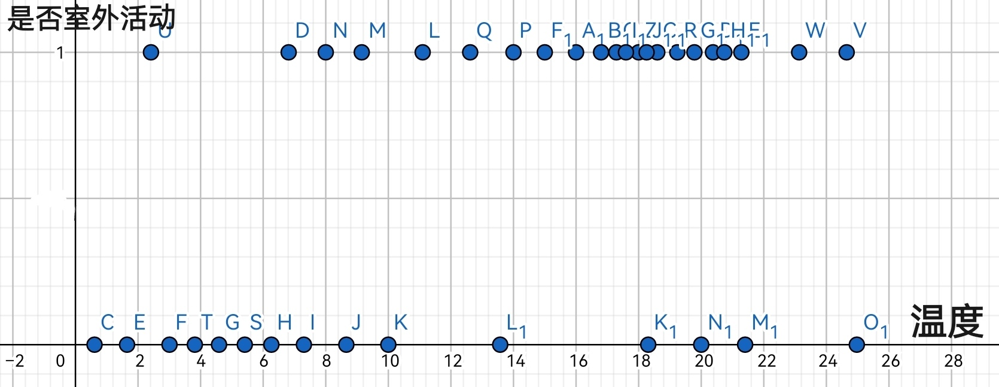
其中纵轴0代表不活动，1代表活动。现在，如果我们想要通过给定的温度来预测一个人去户外活动的概率，该如何做？我们当然会先画一个这些数据点的分割点，在其左侧的，预测为不会外出活动，右侧相反。 如果我们需要让电脑程序找到这个点，又该如何做呢？如果你学过统计学，你可能知道各种回归问题算法，但今天我们要换一种思考方式。 如下图，这是一个感知机(Perceptron)：
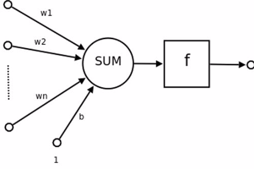
它是由计算机科学家罗森布拉特在1958年首先提出的。我们在讲原理之前，先以上帝视角，把它的算法写出来吧： output=f(∑j wjxj+b) 如果用通俗的方式写出来，它完全等于这个式子： output=f(w1×x1+w2×x2+…+wn×xn+b)
++w和b都是感知机自身的一个属性，或者说是参数，而x则是感知机的输入值。f函数将判断数据大于0还是小于0，大于0就返回1，小于0就返回0++。是的，你可以暂时把感知机理解为一个复杂函数，我们向它输入一些值（x1,x2…xn），它经过处理，就会返回0或1。这个处理过程就是公式1，++将所有的输入值x都乘以其对应的权重（weight），再把这些乘积相加，最后再加上偏置（bias） 即可++。（w和b是它们的缩写，不必为此顾虑）注意，每个感知机中，++对于每个输入值x，都有其对应的权重系数w，但单个感知机只有一个偏置系数b++。这不就是我们初中时学过的一次函数再加一个f函数吗？如果再看原来的”户外活动概率与温度关系图”就不难看出，单个感知机可以看作是output关于x的函数，而w和b就是系数了。这样，只要找到合适的w和b，就可以画出一个函数线（或面、超面）了，但这条线（或面、超面）却只能进行二分类，不能完成我们的任务。
按照刚刚的例子，横轴代表温度，蓝色点代表数据，纵轴代表是否会出门活动。橙色的函数线分开了”适合户外活动”和”不适合户外活动”，两者的”分割点”的位置随w和b而变（因为只有一个维度，所以左右变化）。下面就是这个感知机分类工作的过程演示动画（你可以用鼠标或手指拖动左上角的滑动条来改变w和b的值）：https://www.geogebra.org/m/gwjweugy 本书的全部此类演示你务必要亲手体验才能很好的理解！ 这是你打开后可以体验的画面： 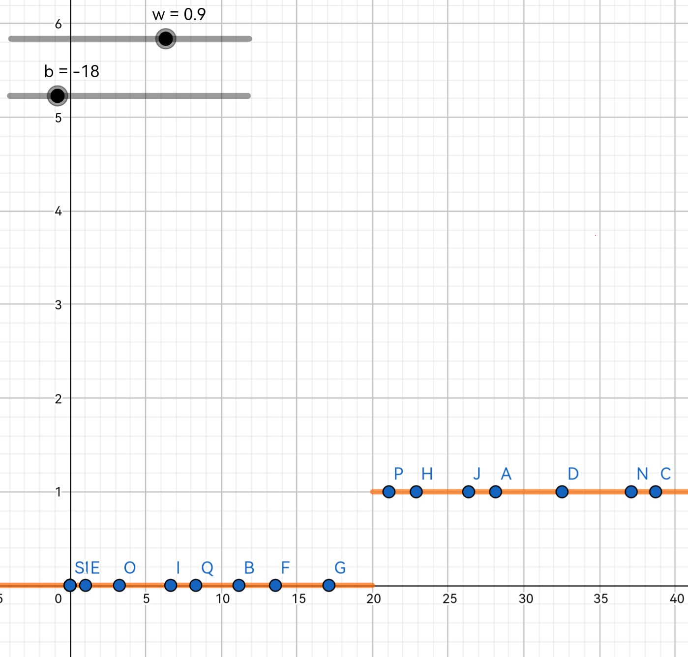
你也要有将其扩展到更高维度去思考的能力： 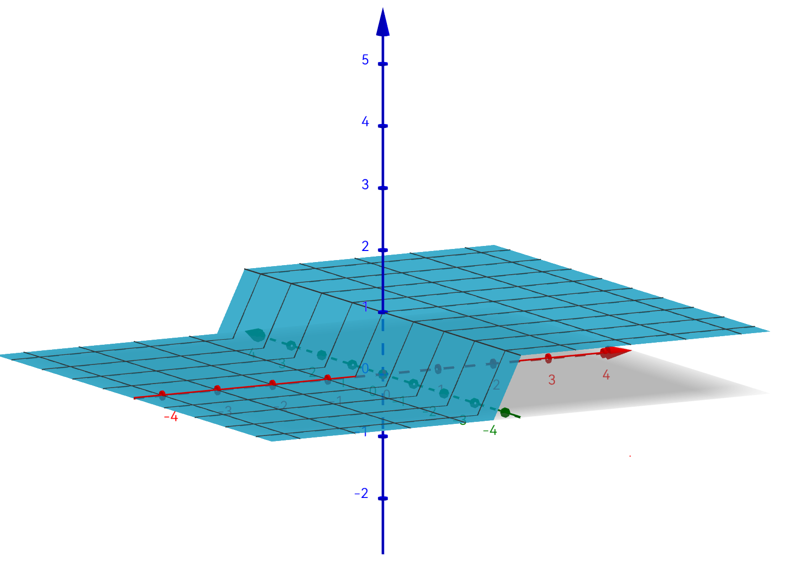
至此，我们应该对原始形态的单个感知机已经有了一定认知了。总结来说，它先用方程画出一条直线（或平面，或超平面），然后将新数据带入感知机函数，得出的值经过函数f判断正负性，最终输出output值0或1，代表新数据在哪一类。
我们也发现了许多问题：++感知机只能进行二分类，而且是线性（linear）的++，也就是说那个函数画出来的线（或面等）是直线或平面，而不是曲线或曲面。这也很好证明，我们会在后面再次验证这一点，不过现在你也可以用纸笔去验证它，像这样（我把偏置b先省略了）：

我们++把单个感知机的输出作为下一个感知机的输入值++，会得到上面这样的结构。把最后这部分式子对应的函数图像画出来，你永远只能得到一个线性图像，再多的感知机连接起来也是如此。 这是因为，不论有多少个x，它们只会被不断的乘以一个常数w再相加，所以它们的++指数永远是1++，也就是一次方，而我们知道一次函数永远是线性的。 事实上，这个问题曾经导致感知机一度被否认。因为它++不能解决异或问题（XOR）++
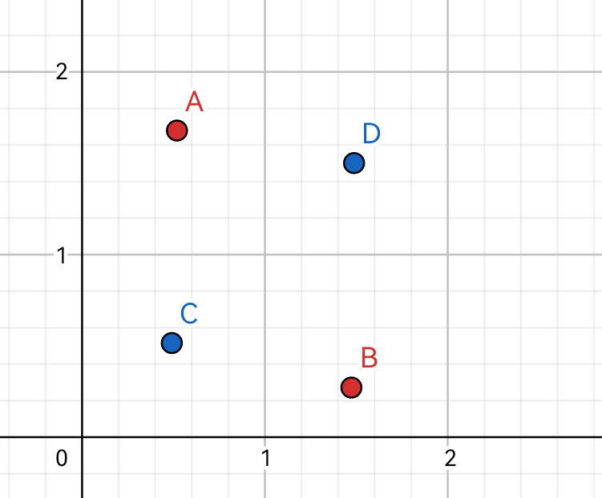 如图，我们能找到一条直线，去完美划分开红色和蓝色两类数据点吗？显然不可能。 这时，我们今天的主角快来了。让我们先谈谈组成整个神经网络的神经元（Neuron）。
我画了一张图，展示了神经网络中单个神经元的结构：
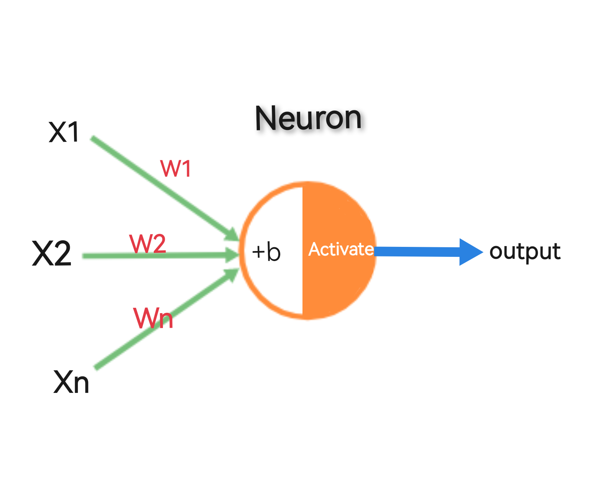 它和感知机还是很像的，仔细观察，它与感知机具体有哪些变化？你大概率会注意到，原先用来判断正负性的函数f不见了。这就意味着，新的神经元不仅会输出0或1。事实上，它可以输出任何值，比如0.11，0.94和0.56等等。取函数f而代之的，是一个激活操作（Activate），就是图像中圆圈的右半部分。 新神经元的表达式：output=f(∑j wjxj+b)，其中f(x)=Activate(x)。这里还用函数符号f，有的书中使用 σ(x) 符号，但记住这个函数不再用于判断正负，而是激活操作。 说点题外话，一些标准教材中，在图像上，会把偏置b乘以w0作为一个整个神经元输入的一部分；更多时候，我们习惯将偏置系数b直接写在神经元旁边，而且为了看着舒服，我们有时候会将所有的权重系数w写到神经元里面（或者隐藏），而不是像图像中一样写在输入箭头上。 回到刚刚的话题上，这个++激活操作其实也是一个函数，就叫做激活函数（Activation Function），而经过激活函数计算的神经元的输出值被称作激活值（activation）++。这个函数是做什么的？刚刚我们说感知机不能解决异或问题，是因为它是线性的。那么激活函数可以解决这个问题吗？当然了！为了使那一条划分或拟合线（或面、超面）变得复杂多样以拟合或分类复杂的数据，我们必须保证神经元的划分或拟合线是一条曲线（以后我应该不需要再强调”线（或面、超面）“了，以后再看到我说划分线，你应该自己能想到这一点了），用专业术语来说，++激活函数必须是非线性的++。 下面让我们了解下几种常见的激活函数吧。
这是ReLU激活函数（The Rectified Linear Unit / 修正线性单元函数）：
f(x) = max(0,x)这是它的函数图像：
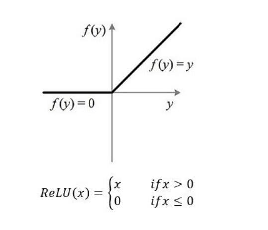 输入值小于0，就返回0，输入值大于0，就返回输入值本身。看上去很简单，而且它是最受欢迎的激活函数！（但是由于其在输入为负时返回0的特点，它可能会在学习率过大时导致部分神经元永久性死亡，听起来好可怕，什么意思呢？我们后面会学到，为了解决这个问题，还有Leaky ReLU、PReLU、ELU、SeLU和GeLU等激活函数，但请别提前担心这件事）
如果你学过javascript，可以将ReLU写成如下代码（js语言很简洁，没学过一般也能看懂）：
function relu(z) {
return Math.max(0, z);
}下面的是ReLU函数的c++代码表达：
float relu(float x) {
return (x > 0) ? x : 0;
}这是Sigmoid激活函数（S型函数 / S型生长曲线）： （由于一些markdown浏览器不能很好地兼容数学表达式格式，所以部分数学公式使用图片展示以确保你能清晰的） 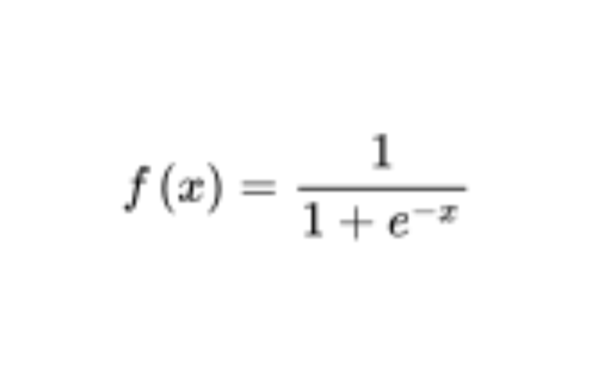 不要被吓一跳，仔细看一下，其实也很简单。函数中的”e”符号就是一个数学常数，类似小学学过的圆周率（π），有一个定值。 e≈2.718281828459 如果你不能理解为什么会有一个e来到这里，请先别担心，我们会在以后讲到。把这个函数图像画出来，长成这样： 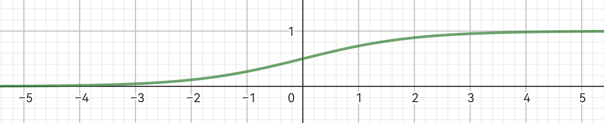
有趣的是，这个函数会把任何输入值缩放（映射）到0到1之间的连续输出，并且只有输入值在0左右附近变化时，输出才会有明显变化，其它情况，要么接近0，要么接近1。 这个函数是多数教程首先讲的，也比较受欢迎，但最大的问题就是：在深度神经网络中会导致梯度消失。（你现在不必明白这些，我只是给你打个预防针） ++由Sigmoid作为激活函数的神经元被称为S型神经元++
这是其js代码表达：
function sigmoid(x) {
return 1 / (1 + Math.exp(-x));
}这是c++版：
#include <cmath>
double sigmoid(double x) {
return 1 / (1 + exp(-x));
}这是Tanh激活函数（hyperbolic tangent function /
双曲正切函数）： 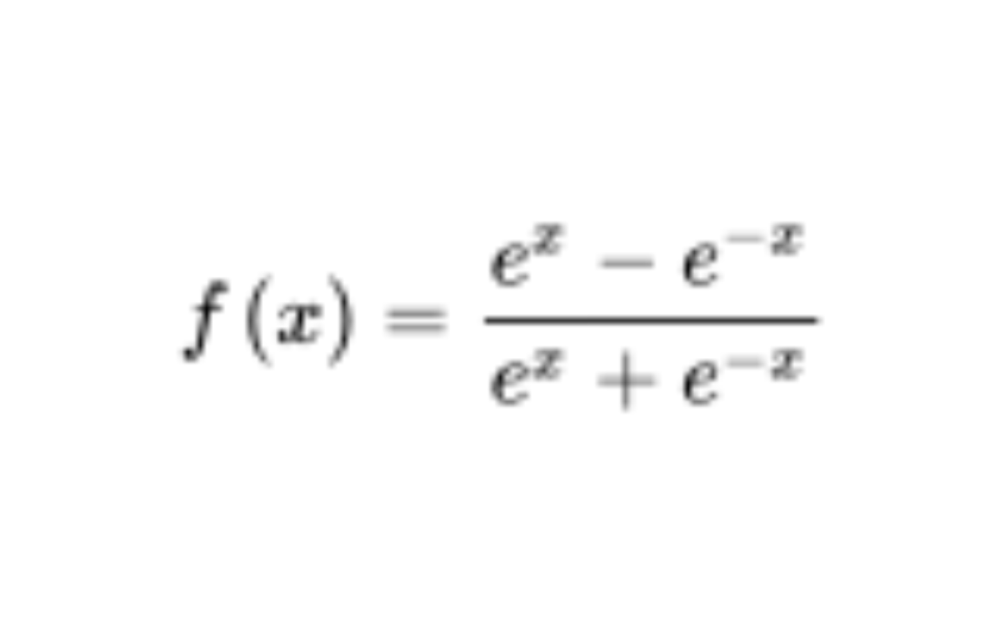
其实你看到的最终表达式是tanh(x)=sinh(x)/cosh(x)的展开式，我们不看这复杂的函数解析式了，直接看图像：
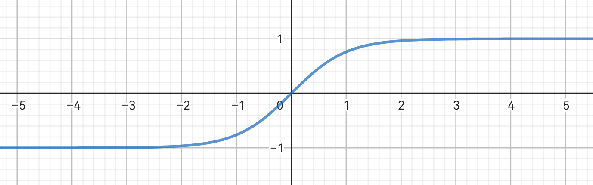
它的图像简直和Sigmoid太像了，只不过它把任何数映射，或者说是缩放到了-1和1之间，而Sigmoid则是0和1之间。它的分布上更加对称。可以得知，它同样会导致梯度消失问题，这是后话。 其js代码表达：
function tanh(x) {
// 使用指数函数计算tanh
var e1 = Math.exp(x);
var e2 = Math.exp(-x);
return (e1 - e2) / (e1 + e2);
}c++的cmath有现成的tanh函数：（cmath对程序性能影响几乎为0，或者说正常情况是百分之百没有影响的）
#include <cmath>
double tanh(double x) {
// 使用标准库函数计算tanh
return std::tanh(x);
}我建议你记住ReLU和Sigmoid这两种最常见的激活函数。 还有许多其它激活函数，如ELU和Softmax等，但它们还不是现在的主角，所以你不必担心。
这就是神经网络中的一个神经元。总结来说，神经元是感知机的优化版，它可以输出任何带有小数的值，并且通过激活函数，实现了划分线的非线性，使其能开始适应较为复杂的数据，初步解决了简单的异或问题。
这是单个神经元的js代码表达（已被细细地拆开，以便学习）：
function Neuron(w, x, b) {
function relu(z) {
return Math.max(0, z);
}
function sigma(w, x, b) {
return relu(w.reduce((acc, curr, i) => acc + curr * x[i], 0) + b);
}
return sigma(w, x, b);
}
//使用示例
console.log(Neuron([0.1,0.6],[0.4,0.3],0.5))//输出值为0.72
//相当于x1是0.4,x2是0.3,w1是0.1,w2是0.6,偏置b为0.5
//计算过程相当于0.1×0.4+0.6×0.3+0.5=0.72c++版：
#include <iostream>
#include <vector>
#include <algorithm>
double relu(double z) {
return std::max(0.0, z);
}
double sigma(std::vector<double> w, std::vector<double> x, double b) {
double sum = 0;
for (int i = 0; i < w.size(); ++i) {
sum += w[i] * x[i];
}
return relu(sum + b);
}
double Neuron(std::vector<double> w, std::vector<double> x, double b) {
return sigma(w, x, b);
}
int main() {
std::vector<double> w = {1.0, 2.0, 3.0};
std::vector<double> x = {4.0, 5.0, 6.0};
double b = 7.0;
double result = Neuron(w, x, b);
std::cout << result << std::endl;//输出值为39
return 0;
}
//原理同上js版虽然c++编写难，但我仍然建议你试一试，因为其性能和速度将在未来学习到的各种深度学习神经网络中远超其它语言！ 下一节，我们将看到神经元是如何构造出神经网络的。
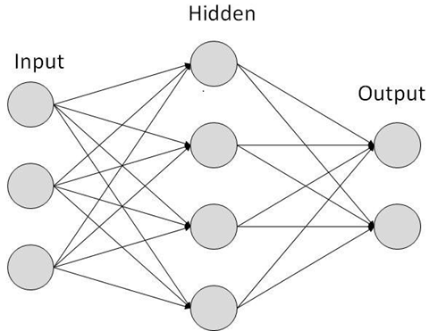 这就是最基础的神经网络，++前馈神经网络（Feedforward Neural Network / FNN），图示的是多层感知机（MLP / Multilayer Perceptron），它属于前馈神经网络最最常见的一种，而前馈神经网络又是神经网络中最常见的一种。MLP多层感知机有时被称为全连接神经网络（Fully Connected Neural Network / FCNN）++。 这个MLP神经网络中，++每个神经元的输出值output都被作为下一个神经元的输入值x参与下一个神经元的计算，如此向前不断推进，神经元之间是全连接的，一个神经元的输出可能会被多个神经元作为输入，一个神经元也可能会输入多个神经元的输出值。数值不断经过每个神经元处理，不断向前传播，从神经网络的输入层（最左边的Input Layer）传播到神经网络的输出层（最右边的Output Layer），而中间的神经元，组成了隐藏层（Hidden Layers）++。 请注意！++多层感知机MLP可不是由感知机构成的，而是由我们后来讲的新型的神经元构成的++。“多层感知机”这个术语已经成为一个惯用术语，尽管从技术角度来说，我们知道它实际上是由多个神经元组成的。这种术语的使用有助于区分单层感知机和多层结构，并突出了多层网络在处理复杂问题时的能力。
我们知道，即使有非线性的激活函数，单个神经元的能力也是有限的，比如如果只是拟合或分类五六个简单的数据，即使一个神经元也能做出这条完美的划分线，但我们知道许多情况下，数据无比复杂，而且输入值x的数量多了（x1,x2,…x9999…），也会加大划分难度。神经网络或者说MLP，通过增加神经元的数量，并把它们全连接起来，实现了几乎可以做出任何形状的划分或拟合线，或者说是几乎可以拟合任何划分或拟合函数。
++举个例子，前面我们讲了单个神经元output=f(∑j wjxj+b)，我们设单个神经元的全部计算为一个函数function Neural_X_X([x])，其中小写x是数组，代表所有输入值x1、x2、xn…；函数名称中的大写X，第一个代表是隐藏层还是输出层，隐藏层就写成H，输出层就写成O，第二个则表示是该层的第几个神经元，比如隐藏层第一个神经元的函数名就是Neural_H_1。我们假设所有的参数（各个权重系数w和一个偏置系数b）已经包含在各自的神经元函数中，并且假设它们已经调整到了最合适的值（只能假设，毕竟我们还没学该怎么调整它们）。现在再看上面的图，这个Input输入层并没有实际的神经元计算，它们都是输入数据x，那么也就是说，这个神经网络有三个输入值：x1，x2，x3。现在去看Hidden隐藏层的其中一个神经元，它连接着每一个输入数据，也就是x1、x2、x3，那么它的输出值的表达式就是：Hidden_Neural_1_Output=Neural(x1,x2,x3)，这里我用Hidden_Neural_1_Output代表隐藏层第一个神经元的输出值，我们为了方便，先简称H1代表隐藏层第一个神经元的输出值，H2则是第二个，同理H3和H4（看图得知，这个神经网络隐藏层只有4个神经元），简称O1为输出层第一个神经元的输出值，O2为第二个。那么就可以写出H1=Neural_H_1(x1,x2,x3)，H2=Neural_H_2(x1,x2,x3)，H3和H4同理。我们再看输出层，它的每个神经元的输入值其实都是上一个隐藏层的每个神经元的输出值，那么就有O1=Neural_O_1(H1,H2,H3,H4)，O2=Neural_O_2(H1,H2,H3,H4)。这样，我们可以把整个神经网络理解成一个超级复杂的函数了！我们通过修改调整每个神经元的参数w和b，来修改调整这个函数的形状，让它成为一条最接近完美的划分或拟合线。说到这里，你是不是对我们刚刚提到的多层感知机MLP、前馈神经网络（正向传播）有了一定的自己的见解？你是否理解了数据不断向前流动（正向传播/前馈）的意思？++
现在你应该再亲手试一试下面这个演示动画了，这个新演示动画中，我们设置了1个输入神经元（输入神经元不对数据做任何处理），2个隐藏层神经元和1个输出层神经元，输出值对应着图像中的y轴，输入值值则对应x轴。所有神经元都使用了sigmoid激活函数。这是演示动画的链接：https://www.geogebra.org/m/sqbm5quf （你可以用鼠标或手指拖动左上角的滑动条来改变每个神经元的参数w和b的值）
你会发现，当你改变参数所有w和b时，函数形状、位置等都会出现改变。仅需调整这些参数，你就可以设计出各式各样的形状。 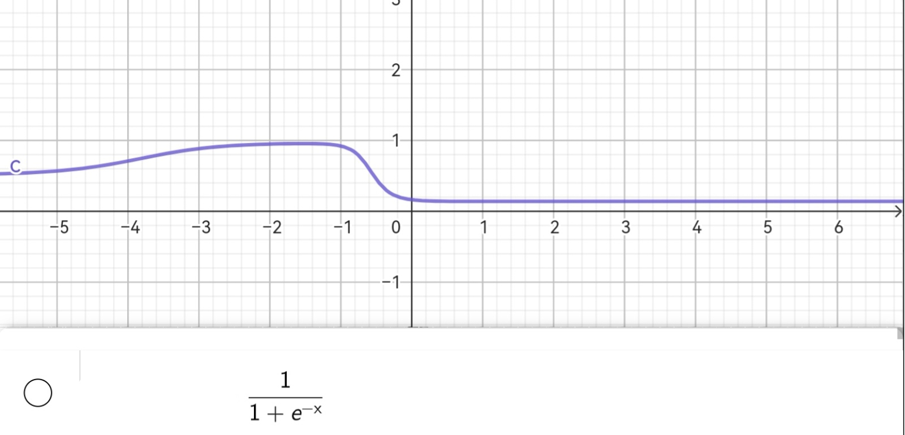
请再试一试用我们以前提到的ReLU等其它激活函数替换sigmoid函数，看看有和变化？（你可以将sigmoid = 后的原式改为 If(x > 0, x, If(x < 0, 0)) 这就是ReLU激活函数的一种表达）预测函数的形状和激活函数有何微妙的关系吗？ 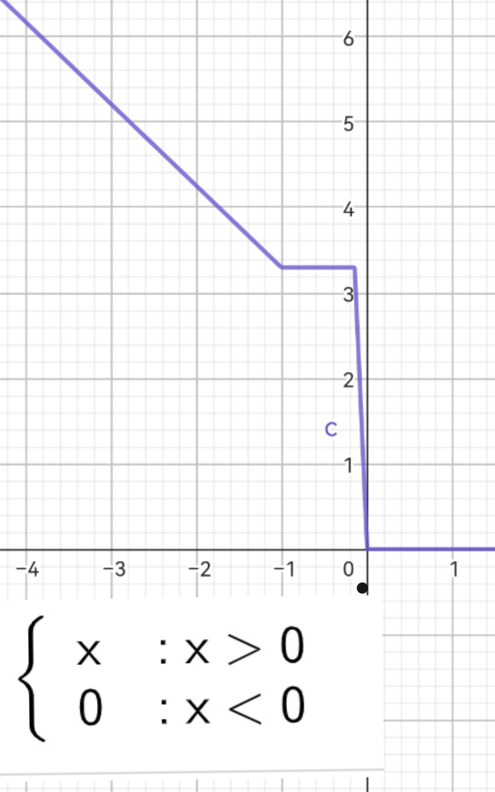
不过我想说，这个还是太局限了，MLP只有1个输入和输出层，但却可以有多个隐藏层，在前馈神经网络中，它们都被称为多层前馈神经网络。请注意！单层前馈神经网络只有一个输出层神经元，所以它并不能构成MLP！我们并不会学习它，因为它实在不能满足我们的需求。一定不要混淆”单层”和”单隐藏层”的概念。再强调一遍，MLP是多层前馈神经网络的一种，必须有一个输入层和输出层，有至少一个或多个隐藏层。
上面的示例中，我们只有3层神经网络和两个隐藏层神经元，可调参数仅有7个，数据维度仅1维，所以并不能实现拟合任何函数。但请想象一下，一个拥有几十层甚至几百层的深度神经网络，有几亿甚至万亿参数的模型，会画出多么壮观的预测函数！
但如果没有了激活函数，一切都变得平淡无奇了，试一试去掉激活函数非线性部分，比如把sigmoid(x) = …后替换为x，即返回x本身，那么预测函数永远都是这样的： 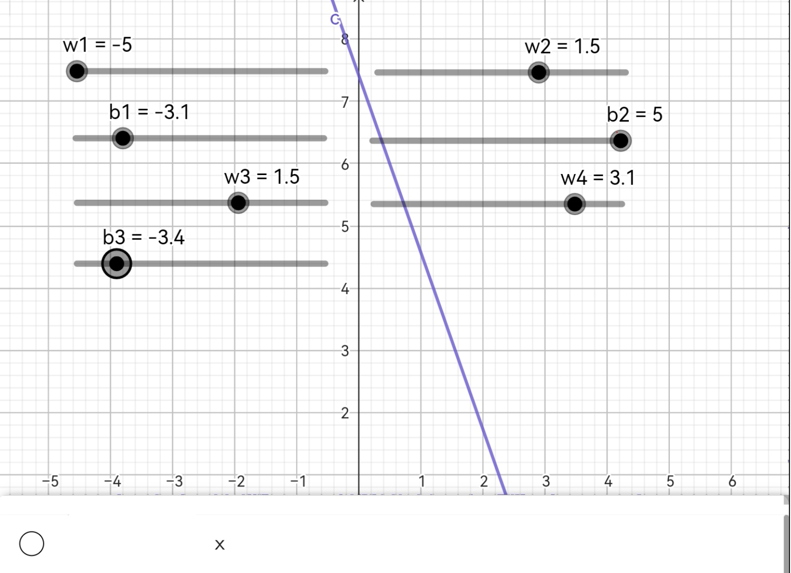
就这样，我们再次验证了神经元相对于感知机的最大优点：解决XOR和非二分类问题。
趁着你对新知识还熟悉，我们回到本书最开头的问题上，看看现在，我们是不是有思路来解决这个问题了？ 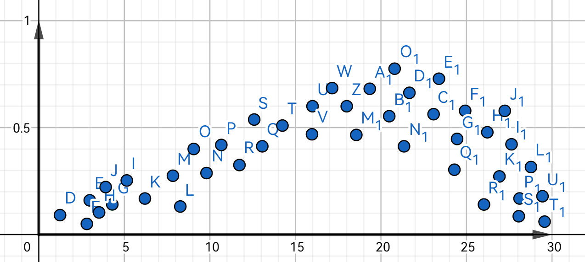 现在，数据看起来有点疯狂了，显然我们如果想要拟合这些数据以进行预测，就需要用一条曲线了。顺便说清楚，++这根曲线就叫做预测函数（Prediction function）++。这我们很熟悉了，只需要一个拥有1个输入神经元，几个隐藏层神经元加一个输出层神经元即可。其中，输入神经元输入”温度”这个值，输出神经元就会输出”户外活动概率”了。不过这里我画图时y轴画成了每个数据点的概率而不是确切的0或1，我希望这样能方便你想象这个预测函数的形状，但记住在现实情况中数据通常不会如此。
这里我不得不再说一下，普通神经网络的预测函数就是输出值关于输入值的++显函数++，也就是自变量有唯一的因变量与之对应，并++不是隐函数或者方程++。如果你看到某个预测函数是闭合或者不像显函数的，例如tensorflow playground，请不要误会，你所看到的曲线并不是原预测函数，而是三维的预测函数曲面在阈值平面上的投影（或者说是相交曲线）。当然，如果你喜欢，也可以令三维的高度等于0获得一个方程，这个方程确实是闭合的划分曲线，但请记住这只是令高度等于0而已，这个曲线不是预测函数，这里的预测函数仍是三维的。 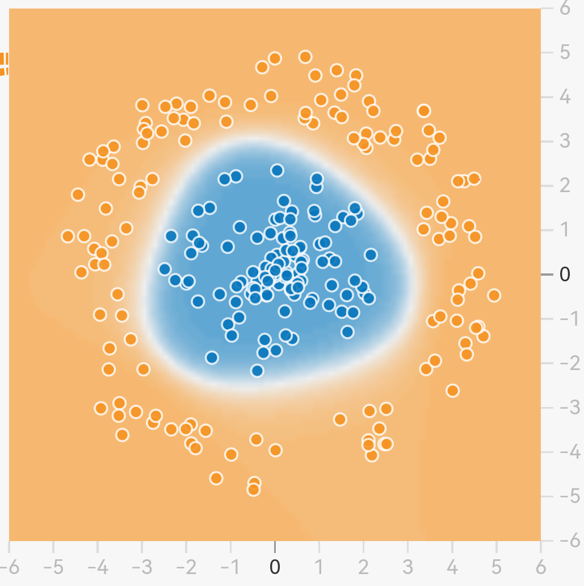 例如这个蓝色与橙色，代表的是预测曲面相应位置的高度，而不是说它本身就是预测函数。下图的绿色曲面才是真正的预测函数，你所看到的平面，是蓝色平面上绿色曲面对应位置的高度，即下图中蓝色平面上方的绿色曲面部分对应上图的橙色部分，蓝色平面下面的则相反。 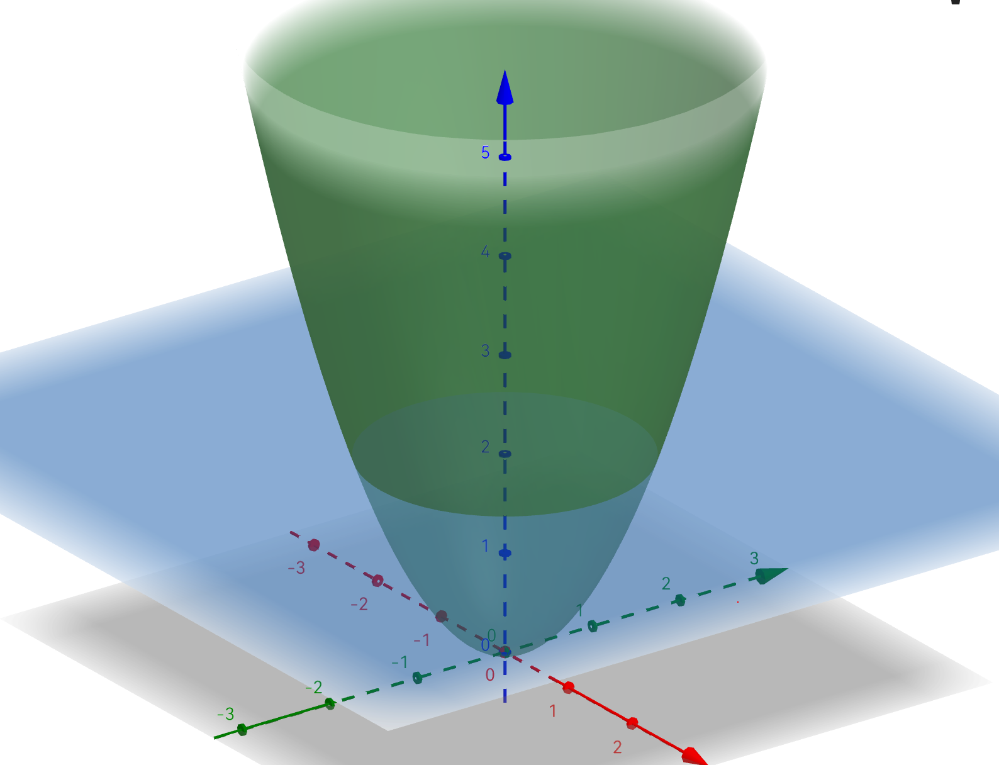 现在，我们已经大致学完了神经网络的架构。差点忘了介绍，Tensorflow是Google开发的神经网络库，而playground是学习神经网络的一个很好的演示工具。 http://playground.tensorflow.org 这是playground的链接，在我们后面的学习中，你将逐步理解这个演示的原理。
你一定迫不及待的想要试一试自己搭建神经网络，只不过我们还没学到如何调整出正确的参数w和b来做出这个预测函数。但我已经提前训练好了一个模型，你可以先试玩一下，感受一下我们刚刚的学习成果。 我们先把神经网络代码写出来，这里因为神经网络规模实在太小，就不用循环语句来计算了。 这是js版本：
//隐藏层第一个神经元
na1w1 = -0.16132499999994152
na1w2 = 0.7
na1b = 0.07210999999999113
//隐藏层第二个神经元
na2w1 = -0.2150150000000196
na2w2 = 0.8
na2b = 1.4037740000000716
//输出层神经元
outw1 = 0.3427469999998477
outw2 = -0.7286400000000355
outb = 0.6238199999996561
pv = predict(18)//当温度为n℃时人们外出活动的概率(可估计温度范围:0∽30℃)
console.log("预测活动概率："+Number(pv).toFixed(2))//输出值为0.76
//神经元计算
function Neuron(w, x, b) {
//Tanh激活函数
function tanh(z) {
var e1 = Math.exp(z);
var e2 = Math.exp(-z);
return (e1 - e2) / (e1 + e2);
}
//连乘求和
function sigma(w, x, b) {
return tanh(w.reduce((acc, curr, i) => acc + curr * x[i], 0) + b);
}
return sigma(w, x, b);
}
//预测函数,即向前传播
function predict(content){
in1 = content
na1 = Neuron([na1w1,na1w2],[in1],na1b)
na2 = Neuron([na2w1,na2w2],[in1],na2b)
out = Neuron([outw1,outw2],[na1,na2],outb)
return String(out);
}这是c++版本：
#include <iostream>
#include <cmath>
using namespace std;
//隐藏层第一个神经元
double na1w1 = -0.16132499999994152;
double na1w2 = 0.7;
double na1b = 0.07210999999999113;
//隐藏层第二个神经元
double na2w1 = -0.2150150000000196;
double na2w2 = 0.8;
double na2b = 1.4037740000000716;
//输出层神经元
double outw1 = 0.3427469999998477;
double outw2 = -0.7286400000000355;
double outb = 0.6238199999996561;
// Tanh激活函数
double tanh(double z) {
double e1 = exp(z);
double e2 = exp(-z);
return (e1 - e2) / (e1 + e2);
}
// 连乘求和
double sigma(double w[], double x[], double b) {
double sum = 0.0;
for (int i = 0; i < 2; i++) {
sum += w[i] * x[i];
}
return tanh(sum + b);
}
// 神经元计算
double Neuron(double w[], double x[], double b) {
return sigma(w, x, b);
}
// 预测函数，即向前传播
double predict(double content) {
double in1 = content;
double na1 = Neuron(new double[2]{na1w1, na1w2}, &in1, na1b);
double na2 = Neuron(new double[2]{na2w1, na2w2}, &in1, na2b);
double out = Neuron(new double[2]{outw1, outw2}, new double[2]{na1, na2}, outb);
return out;
}
int main() {
double pv = predict(18); // 当温度为n℃时人们外出活动的概率（可估计温度范围: 0∽30℃）
cout << "预测活动概率：" << pv << endl; // 输出值为0.76229
return 0;
}我只用了10个在0至30度直接的训练数据来训练这个网络，所以你只有输入0至30之间时，输出值才较为可靠。而且这个神经网络也只有4个神经元。 建议你读一读代码（如果你会js或c++），看看每行代码是不是都能与我们前面所学习的对应上。
在我们学习神经网络的训练之前，我们要先再巩固一下几个易混淆概念，这些概念如果在网上搜，可以说是结果乱七八糟，其中许多文字或视频中讲解都有问题。我在学习过程中也很受干扰，所以我从头又查阅了许多文献，自己总结了其中用语的规律，绘制了这样一个关系思维导图： 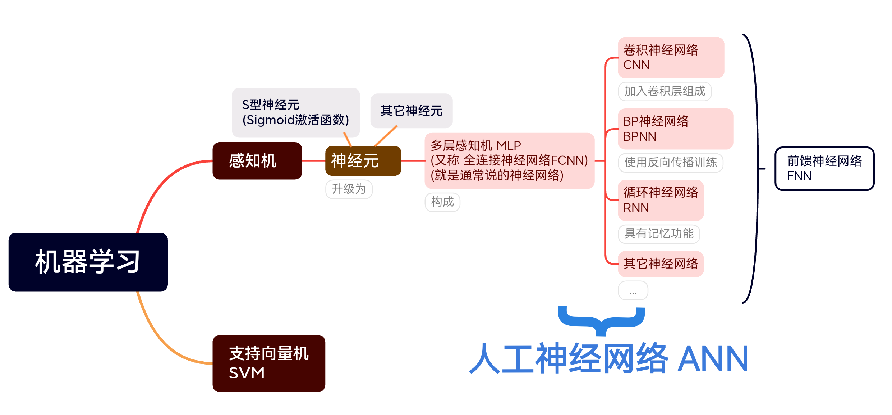 CNN、RNN其实也算是BP神经网络，但是图中这样写可能更方便一些。其中一些概念我们还没学到，但后面应该会讲到。现在我们已经了解了这些概念中的感知机、神经元、多层感知机MLP。接下来我们将学习如何训练一个神经网络。
++神经网络的训练过程，其实就是在不断优化预测函数。++ 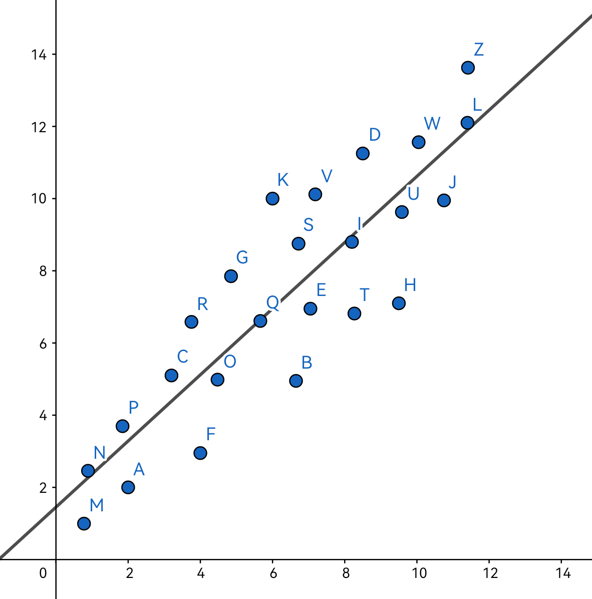 我们需要先准备一些数据，然后让神经网络去寻找一个最佳的预测函数，对数据进行拟合或划分。当我们随机的初始化神经网络的参数（权重和偏置）时，输入一个数据，它会胡乱输出一个结果。例如，我初始化了一个拥有2个输入神经元，n个隐藏神经元和1个输出神经元的神经网络，我希望通过输入户外的温度和湿度，来让他告诉我今天是否适合户外运动（0代表不适合，1代表适合），当我输入了35（这里我用的是摄氏度）和0.9（湿度百分比）时，神经网络理直气壮地输出了0.96，而我认为这个值应该只有0.2。这时，预测函数的++输出值与真实值之间就有了误差（error），或者叫做损失（loss）++，它们都是一个具体数值，通常是真实值与预测值的差的绝对值，即err=|y-y^|，其中y是单个数据的真实值，y是神经网络预测函数对该数据的预测值（输出值），符号读作hat。若神经网络有多个输出神经元即多个输出值，可以++求平均或对每个数据都使用损失函数（loss function） 再求和++。不过，损失和损失函数都是针对一个数据来说的。每次训练神经网络通常会有许多个训练数据，这时，为了计算所有训练数据的误差之和，我们定义了代价（cost） 和代价函数（cost function） 。你只需记住：++损失是针对单个样本，代价是针对单次训练的全部样本++。
既然要优化改进我们的模型参数，就先要知道模型参数到底差在哪里，差多少。 现在我们需要学习一些最基本的代价函数：
1.均方误差（MSE / Mean square error） 这个代价函数++对应的损伤函数应该是最小二乘法（LS / Least-square method）++，“最小”即在++寻找函数的最小值++，“二乘”即代表++误差要进行平方++。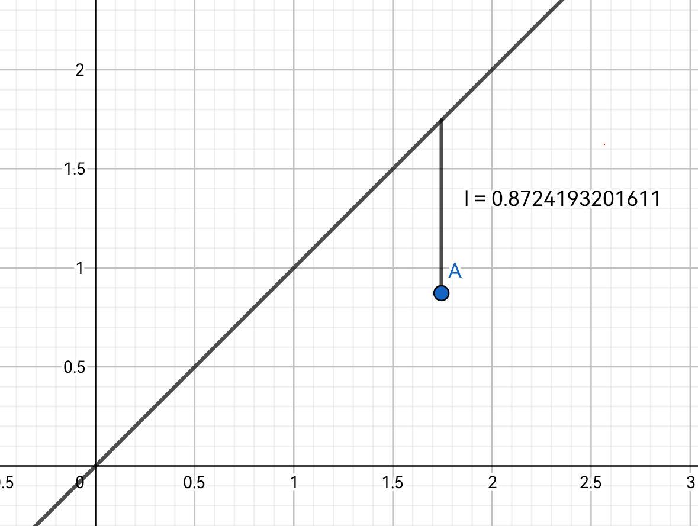如图中数据A的输入值x为1.75，真实值y为0.87，预测值则是3.06，那么误差就是 (0.87-3.06)² ，即图中l的平方0.87²。这里的最小二乘法可简单写成err=(y-y^)²。现在，看完这句话后，暂停阅读，先自己思考一下，最小二乘法的优点是什么？ 最小二乘法一方面将y-y^的值都通过平方，++变成了正数++，从而确保未来有多个数据后误差不被互相正负抵消掉，另一方面，++扩大了大误差，缩小了小误差++，如0.1经过平方变小成0.01，10平方后变大成100，从而让关键误差变得醒目，最重要的，++绝对值不是全程可导的++（绝对值图像顶点是尖尖的，不可求导，而二次函数顶点是圆圆的，可求导），我们后面学到梯度下降法时就会明白这一点的重要性。 而现在我们有了许多个训练数据，如下图： 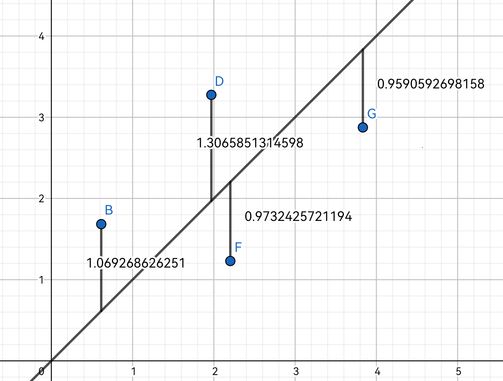 现在，我们有了4个数据的误差值，即你所看到的4个到预测函数的线段的距离。我们++对每个数据的误差值都做平方操作，即二次代价（quadratic cost），最后将平方后的误差求平均（求和再除以总个数），即均方误差++。数学表达式： cost = (1/n) * Σ(y - y_hat)² 其中n是数据总个数，其它的我们都讲过了。有时为了节省算力，++会去掉求平均++（*(1/n)）这一步，只要每次训练都这样去掉求平均，那么对最终训练结果肯定是无影响的，当然为了方便求导，++有时也会写成除以2++，因为我们知道x²的导数就是2x，2和1/2相乘约分变成了1，方便计算。 均方误差MSE，是要求我们不断减小这个误差值，是我们初识神经网络时最常用的代价函数。
MSE的js代码：
function MSE(out, out_hat){
err = 0
for(i=0;i<=out.length-1;i++){
err += (out_hat[i] - out[i]) * (out_hat[i] - out[i]);
}
return err / out.length
}
console.log(MSE([1,2],[2,2]))//输出0.5
//[1,2]是2个真实值，[2,2]是与其对应的2个预测值c++版本：
#include<iostream>
#include<vector>
#include<cmath>
double MSE(std::vector<double> out, std::vector<double> out_hat){
double err = 0;
for(int i=0; i<out.size(); i++){
err += pow(out_hat[i] - out[i], 2);
}
return err / out.size();
}
int main(){
std::vector<double> out{1, 2};
std::vector<double> out_hat{2, 2};
std::cout<<MSE(out, out_hat)<<std::endl;//输出0.5
return 0;
}
//原理同js版本2.极大似然估计（MLE / Maximum Likelihood Estimate） 许多人讲到这里直接就讲起了高斯分布，上来就让许多人产生了畏惧之情。事实上，我们没必要去先把这些较难的东西摆在眼前。“极大似然估计”这六个字，我们逐一拆开来看。“极大”，看来不同于上一个MSE代价函数，这里是要找到MLE代价函数的最大值，而不是最小值，这是为什么？仔细想一下，说到最大值，我们首先应该会想到概率。概率越大，表达这件事发生的可能性越大。我们继续往后读，看到了”似然”和”估计”两个词。也许我们还不知道什么是”似然”，但看到了”估计”二字，就可以确定，这个东西一定和概率有什么联系。这时，我们就应该讲一讲似然（L / likelihood） 了。
我们小学时就知道，概率（P / probability） 表示一个事件发生的可能性，例如P(A)就表示事件A发生的可能性，这里的A可能是”抛硬币人像面朝上”、“中了一等奖”或”赢得跑步比赛第二名”之类内容。但我们在求一个概率时，通常是要给出一个背景条件的，如”硬币是均质的”、“从10个标签中抽奖，只有1个标签对应一等奖”或”这位选手平时跑步一半次数跑第一，一半次数跑第二”，这样，我们就能计算出这三个事件对应的概率分别是1/2、1/10和1/2。 然而，我们今天学习的似然值，和概率恰好相反。现在，我告诉你，有三种抽奖机：第一种每次共有10个标签，5个是一等奖标签；第二种每次共有10个标签，1个是一等奖标签；第三种每次共有10个标签，没有一等奖标签。我抽了一百次奖，中了8次，那么请问我正在哪台抽奖机上抽奖（中途未换过）？你大概率会回答我：第二种。这是因为，第二种抽奖机在当前抽100次中8次奖的背景或现状下，更符合这个条件，或者正在使用这个抽奖机的可能性更大。统计学中我们称之为：似然值更大。刚刚我们抛开各种晦涩难懂的公式，我们应该已经知道，似然大概是++表达在某个事件已经发生之后，我们再回头去判断这个事件发生的背景最有可能是什么样的++。 现在回头再看一看公式，应该就没有什么困惑了。 假设我们不知道一个硬币是否是均质的，并且我们不考虑任何影响较小的物理现象。于是我们设硬币的正面重量占比为θ（读作Theta），反面就是1-θ。我们要求L(θ)即θ的最大似然值，因为我们已讲过似然值最大时该θ是正确的的可能性最大。于是我们开始抛硬币，抛了10次后，2次正面朝下，8次朝上。这时，抛2次硬币全部正面朝下的可能性就是θ的2次方（因为抛一次正面朝下的可能性是θ，而两件事同时发生表现为概率或似然的连乘），而抛8次硬币全部反面朝下的可能性就是1-θ的8次方，而这两个事件又在我们的实验中同时发生了，所以再进行相乘，最终得到 L(θ) = (θ^2) [(1-θ)^8]* 这时，我们只需要找到L(θ)的最大值，就能找到最好的参数θ了。
在神经网络中，当我们数据的真实值是xi而神经网络的预测值是yi时，就可以使用 likelihood = P(xi|yi) 来表达。其中P()就是概率了，“|”符号表示条件概率，P(A|B)意为在B的条件下A发生的概率。在我们的神经网络中，我们实际上根本上是在计算P(xi|NN)，这里的NN是神经网络中所有参数（w和b）的合集。P(xi|NN)就可以理解为在这样一个神经网络模型的计算背景下，判断结果是xi的概率（记住xi是真实值，所以这个概率越大表示越接近真实值，越好）。但显然我们不可能直接将NN展开一一计算，但我们知道NN最终输出了yi这个值，所以就有了上面的这个 likelihood = P(xi|yi)。 用我们刚刚学习的似然值计算方法展开，得到 cost = (yi^xi) [(1-yi)^(1-xi)] 不过，这一般用于输出值在0-1之间的概率/分量等模型。 当有多个训练数据时，代价就可写成： TotalCost = ∏i (yi^xi) * [(1-yi)^(1-xi)]* 其中”∏“符号代表连乘，即把后面++每个最终计算结果都相乘++，这是因为这里是似然，和概率一样，同时发生表现为连乘。最后，我们的目标就变成了找到TotalCost的最大值。
注意！++极大似然估计仅适用于输出结果在0到1之间的概率分类或拟合模型，此损失/代价函数不支持输入小于0或大于1的预测值或真实值！++
我想，现在配上互动演示就完美了。请打开我制作的Geogebra演示： https://www.geogebra.org/m/wmfrg8r7 你会看到一个橙色的曲线，它的表达式是这样的： 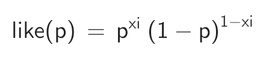 xi就是数据真实值了，p是预测值。你可以在这个演示页面的左上角看到一个橙色滑动条，左右滑动可以调整xi的值，这时，观察图像，你将会发现，橙色函数曲线的最高点所对应的横坐标的值就是xi的值。现在暂停阅读，迅速回答这个问题：橙色函数所对应的函数图像的横轴和纵轴分别对应着我们讲过的什么？ 很好，不难理解，纵轴显然就是似然值了，既然p是预测值，那么似然值最高点所对应的p一定就是最接近真实值xi的p，那么横轴一定就对应着预测值p了。 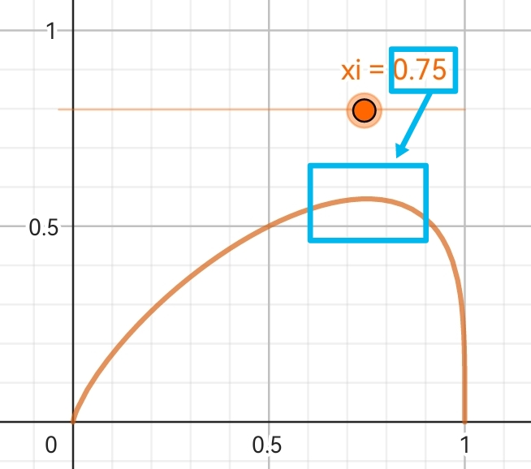 这就是极大似然估计。一些时候为了不出现太多连乘和乘方，也会使用log计算，当然我个人认为次方的写法让人更容易联想到似然值的本质。
MLE的js代码：
function MLE(out, out_hat){
likelihood = 1
for(i=0;i<=out.length-1;i++){
likelihood *= Math.pow(out_hat[i], out[i]) * Math.pow(1 - out_hat[i], 1 - out[i]);
}
return likelihood
}
console.log(MLE([0,1],[0.3,0.8]))//输出值约0.56
//[0,1]是真实值，[0.3,0.8]是预测值，都必须在0和1之间c++版本：
#include <iostream>
#include <cmath>
using namespace std;
double MLE(int out[], double out_hat[], int n) {
double likelihood = 1.0;
for (int i = 0; i < n; i++) {
likelihood *= pow(out_hat[i], out[i]) * pow(1 - out_hat[i], 1 - out[i]);
}
return likelihood;
}
int main() {
int out[] = {0, 1};
double out_hat[] = {0.3, 0.8};
double result = MLE(out, out_hat, 2);
cout << result << endl; //输出值为0.56
return 0;
}（选读：）最后还有一点，如果你了解过高斯分布/正态分布，有时也可以用同样的道理去把xi和yi分别带入到正态分布中。 https://www.geogebra.org/m/rkx8fy5z 你可以看一看我的这个演示，拖动参数b的滑动条使红色抛物线的形状越来越接近绿色抛物线的，这时蓝色直线所代表的似然值大小就会开始上升，知道两条抛物线完全重合，似然值来到最高点。你可以去演示的代数区自行研究下其中的原理，这里我就不做过多解释了。 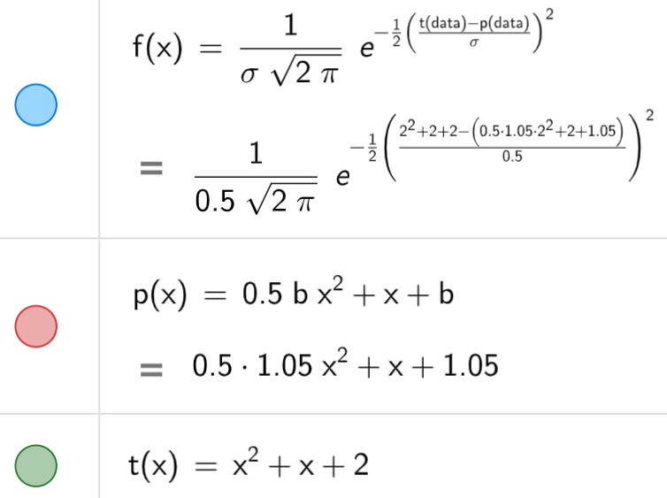 还有与其相关的一部分代码，我只写了js版本，因为这个东西在MLE中并不是很常用，稍作了解即可（其中涉及的梯度下降法，建议在我们学习完梯度下降法之后再可以有选择性的读一读这段代码）：
function calculateLikelihood(data) {
let likelihood = 1;
// 初始化参数b
let b = 2;
sqrt2pi = Math.sqrt(2 * Math.PI);
// 循环更新参数b
for (i = 0; i <= 20; i++) {
sigma = 1
// 计算当前的似然函数值
currLikelihood = 1;
for (let j = 0; j < data.length; j++) {
[x, y] = data[j];
yhat = Number(Math.pow(2,x)+b);
error = y - yhat;
currLikelihood *= (1 / (sqrt2pi * sigma)) * Math.exp(-0.5 * (error / sigma) ** 2);
}
console.error("似然值："+currLikelihood)
function normalDistributionDerivative(sigma, err) {
coefficient = 1 / (Math.sqrt(2 * Math.PI) * sigma);
exponent = (-1 / 2) * Math.pow((err / sigma), 2);
derivative = coefficient * Math.pow(Math.E, exponent) * (-1 / sigma) * err;
return derivative;
}
d = 0
for (let j = 0; j < data.length; j++) {
[x, y] = data[j];
yhat = Number(Math.pow(2,x)+b);
error = y - yhat;
d += normalDistributionDerivative(1, error)
}
d = d / data.length
b -= rate * d
log("b ← "+b)
}
return b;
}
rate = 1
data = [[-7.6, 0], [-0.85, 0.55], [1.5, 2.83]]
console.info("最终结果："+calculateLikelihood(data))其实梯度下降法是神经网络中非常美妙巧妙的方法，想一想就使人感到神奇。 我们先抛开公式，一步步看一看，这个方法到底是怎么来的。
在学习本框前，请确保你已了解什么是导数（Derivative），如果还不了解，建议你观看3Blue1Brown的视频，在他的微积分系列视频中的前几期视频详细讲解了导数，讲的非常好。视频链接在本书开头提到了。
首先，假设有一个山脉，现在我们站在山中的某个位置，山中雾气很大，因此我们只能看到自己脚下这片土地的斜率是多少。现在的情形就像这样： 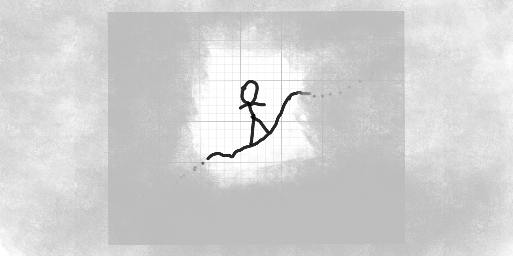
现在，我们需要尽快到达山底去寻找一个村庄过夜。仅看这幅图，凭借常识回答我：我们应该往图片中的左边走还是右边走？应该是左边吧，可是为什么呢？毕竟我们又看不到山底究竟在哪个方向，只能看到脚底下土地的斜率。显然，我们就是通过脚下地面是向左倾斜的来推断出左边大概是下山之路。因此，我们设当前我们所在的横坐标（图中左x小，右x大）为x，高度即纵坐标为y，脚下正对着的土地的导数（切线的斜率）为d（先不要在意如何求这个d具体的值是多少）。那么当d大于0时，可知土地向左倾斜，为到达山底，就要向左走，即在x的基础上减去一段距离（x←x-△x且△x>0（“←”符号表示将某变量的值赋值更新为箭头右边的内容；△符号通常表示增加的数，即增量））；反之，当d小于0时，可知土地向右倾斜，为到达山底，就要向右走，即在x的基础上增加一段距离（x←x+△x且△x>0）。我们刚刚一直在规定△x必须大于0，还要分类讨论，未免太过于麻烦了，而且我们还需要知道，到底该走多远合适（即△x为多少合适），如果一直不管脚下土地现在的斜率是多少，而是直接向前走很远，很可能会错过山的最低点，反之如果△x太小，可能要走很久才能到达最低点。这时，我们就注意到了刚刚讲的导数d了。我们知道d越大切线越向左倾斜，d越小切线越向右倾斜。而且，我们知道，在斜率很大的时候，表示这个方向肯定下山速度很快，那么向这个方向快速移动便可以以最快速度到达山底；反之，斜率很小时可能已经接近山底了（可能有时没有，但这一点我们后面再讲），我们要放慢脚步，以保证不错过最低点。因此，我们得出了这样的式子：
x←x-d
这样，就可以++根据斜率大小，来决定向哪个方向移动多远++了。为了更好的++把控速度，我们还添加了一个名为学习率（η
/ Learning rate） 的超参数（Hyperparameter）++
，++将导数d与其相乘以使学习率能够实时地人为地控制我们的学习速度++，得到式子：
x←x-η*d
之所以将其称为超参数，是为了避免与神经网络本身的参数（即w和b）混淆。
后面，我们还会学习一些超参数，调整它们非常重要。++学习率过大，我们很可能会人为地错过最低点，过小就会浪费大量计算资源++。
现在是时候体验一下演示了： https://www.geogebra.org/m/gequxauv
打开我制作的这个演示，在此演示中，b是图像横坐标，我们需要找到合适的b，也就是曲线的最低点，就要一步步向下走。
 先让点A来到这个位置，可以将它想象成一个球，它现在要滚落下山坡。在页面左上角滑动条，将学习率η调到0.1左右，然后点击紫色的train按钮，观察A是如何一步步向下滚落到谷底的。这里的黑色切线的斜率就是导数d，在这个演示中我使用了k来表示。大约点击了50次train按钮后，A已经滚落到谷底了。
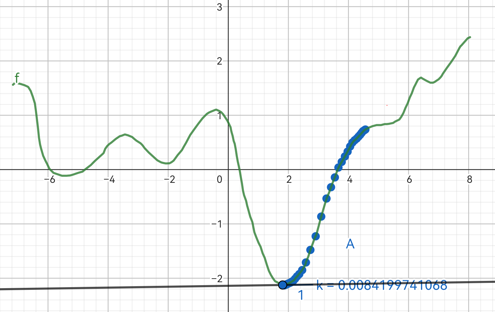
蓝色点记录了A的移动轨迹，可以看到，在山坡较陡斜率较大时，A快速滚落，到达低点时，山坡变得平缓，斜率减小，A慢慢停下，直到已经几乎来到了最低点。
现在，先将学习率调到0.05，找到页面左下角的播放按钮，点击后即可开始实时训练。将A点拖到山坡上，即可看到它开始自己向下滚落。我们将学习率改为0.01，这时它滚落的速度就会非常慢；将学习率调到1，这时它就总会在山谷两侧来回震荡，一直在错过最低点，无法收敛。当然没有人限定学习率必须是多少，你应该在训练时根据实际情况来考虑学习率的大小，有可能是0.0001，有可能是20等等，后面我们也会学到自适应学习率机制。
先让点A来到这个位置，可以将它想象成一个球，它现在要滚落下山坡。在页面左上角滑动条，将学习率η调到0.1左右，然后点击紫色的train按钮，观察A是如何一步步向下滚落到谷底的。这里的黑色切线的斜率就是导数d，在这个演示中我使用了k来表示。大约点击了50次train按钮后，A已经滚落到谷底了。
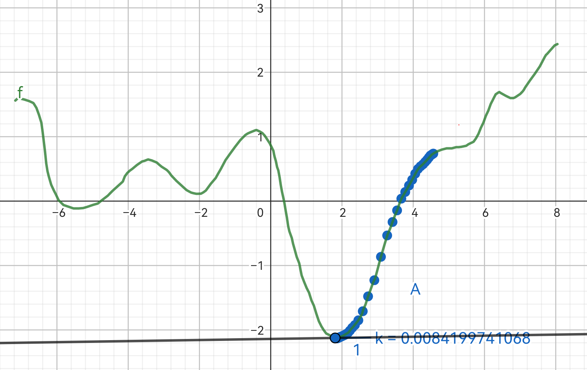
蓝色点记录了A的移动轨迹，可以看到，在山坡较陡斜率较大时，A快速滚落，到达低点时，山坡变得平缓，斜率减小，A慢慢停下，直到已经几乎来到了最低点。
现在，先将学习率调到0.05，找到页面左下角的播放按钮，点击后即可开始实时训练。将A点拖到山坡上，即可看到它开始自己向下滚落。我们将学习率改为0.01，这时它滚落的速度就会非常慢；将学习率调到1，这时它就总会在山谷两侧来回震荡，一直在错过最低点，无法收敛。当然没有人限定学习率必须是多少，你应该在训练时根据实际情况来考虑学习率的大小，有可能是0.0001，有可能是20等等，后面我们也会学到自适应学习率机制。
现在我们已经很接近梯度下降法了，我们已经知道如何找到某个函数的最低点了。还记得我们在上一框中的最终目标是什么吗？我们要找到最小的损失值，使我们的神经网络能够更好的拟合或划分数据点，我们需要优化并调整神经网络的权重和偏置参数，来实现这一点。因此，在刚刚的这个例子中，横坐标x其实就对应着我们在神经网络中要优化的某个参数，而纵坐标（高度）就是代价函数算出来的损失值了。这里值得注意的是，MSE代价函数需要找到最小值，而MLE代价函数需要找到最大值（即梯度上升）。可是，神经网络中有许多个权重和偏置参数，所以这时，二维坐标系就不够了。这里的每一个权重和偏置参数都是自变量，而因变量是代价/损失值，（所以这里的维度非常多，不可能完全可视化地展现出来）所以在我们找到代价函数最小值的过程中，可就不是只在左右移动了。这时，梯度（Gradient） 这个概念就应该出来了。
首先，我们明确一点，++在寻找代价函数最小值的过程中，移动的方向是一个向量++，它是有方向、有长短的。为了简化问题，我们先假设我们只有一个神经元，它的表达式是：out = wx + b ，那么，假设在我们有充足的训练数据后，画出了这样一个损失值关于w和b的函数图像： 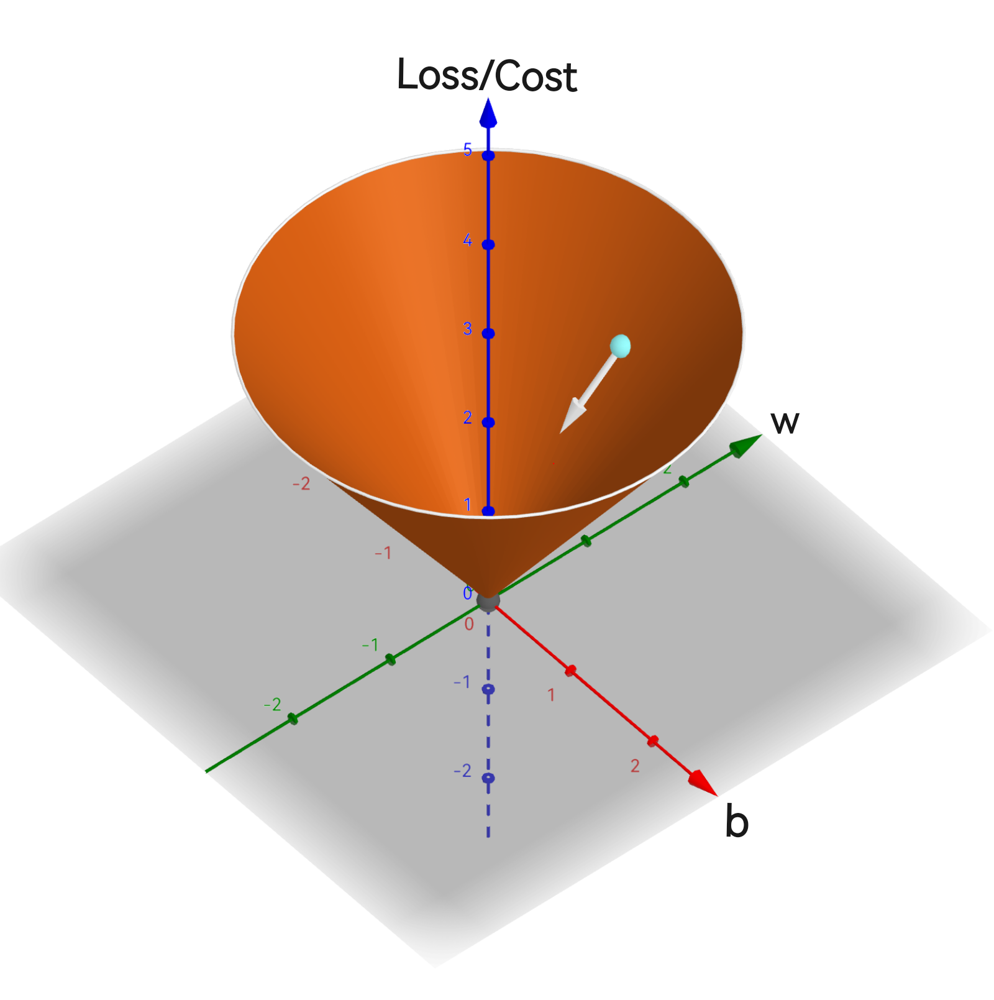 图像中，白色小球就是该神经元w和b的参数下对应的损失值，现在需要调整w和b，使损失值最小。因此，根据刚刚学习内容，我们先画出一个向量，注意，++此向量指向的是下降最快的方向++，而不是指向最低点！这个向量应该被分解到w和b轴上，因为它们是我们要调整的参数（而纵轴loss不是直接能调整的）： 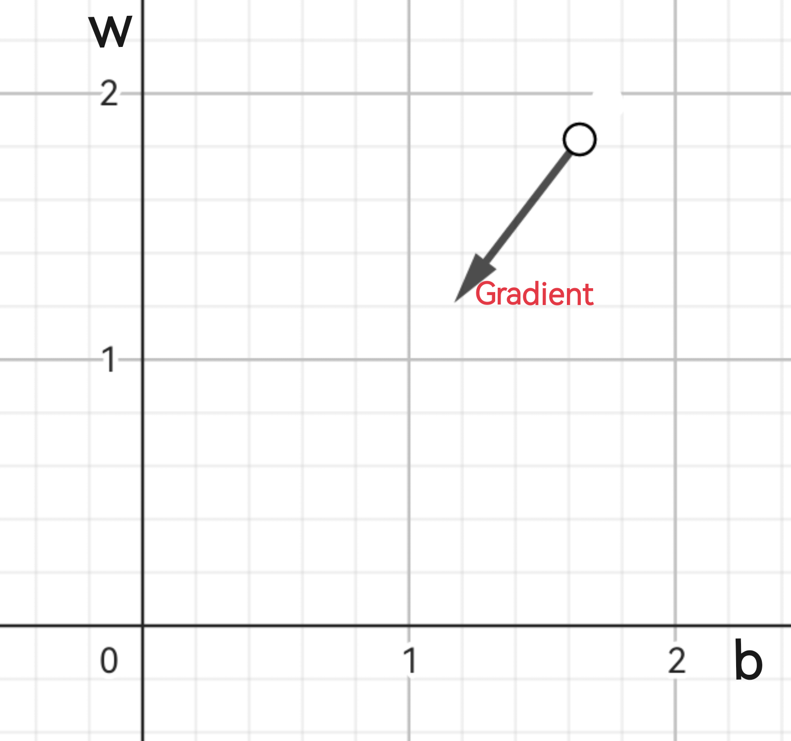 其实，向量的分解在这里可以直接理解为是将一个三维上的方向投影到二维平面上，是投影，而不是平铺，所以长度是会发生变化的，相当于删去了向量的纵轴这个维度。这个示例中的这个二维向量基本上就是我们说的梯度（++在有n个参数需要优化时，梯度就有n个维度，因为同样不计入因变量loss这个维度++）。
然而，这个梯度/向量我们是没法直接获取的，我们++需要再计算它在w和b方向上的分量，即偏导数++。 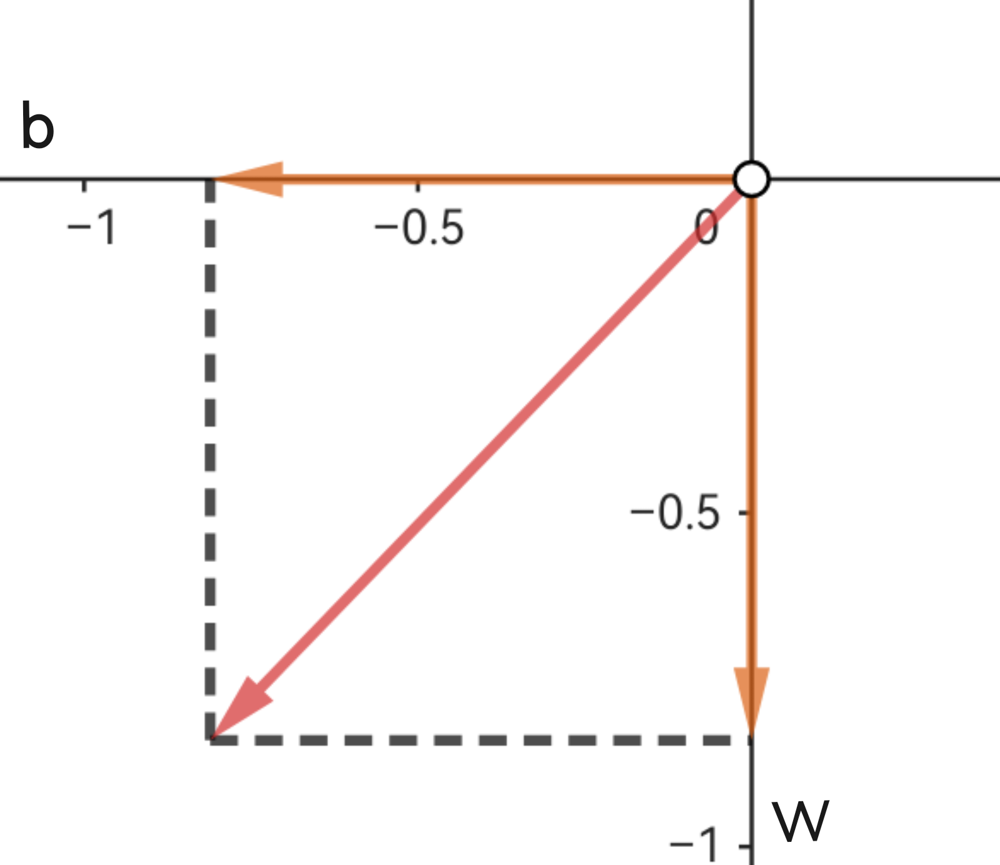 如图，我们以当前参数w和b的位置为原点，又将梯度向量进行了分解，分解到了w和b方向上。
如果你不了解偏导数，我会简单的介绍一下： 我们知道导数是切线的斜率，那么，在大于两个维度时，一个因变量可能会同时受到两个自变量的影响。简单来说，我们为了确定某一个自变量对因变量的影响，先将其它变量看作常数（在实际的神经网络训练过程中，我们是知道这些变量目前具体值的，如w和b，我们只是想知道该如何调整优化更新它们），此时只剩下了一个自变量，再进行求导即可。这时，求出的导数就叫做”<因变量>对<未被看作常数的自变量>的偏导数”，记作∂因变量/∂自变量 ，其中，“∂”符号读作round。举个例子： 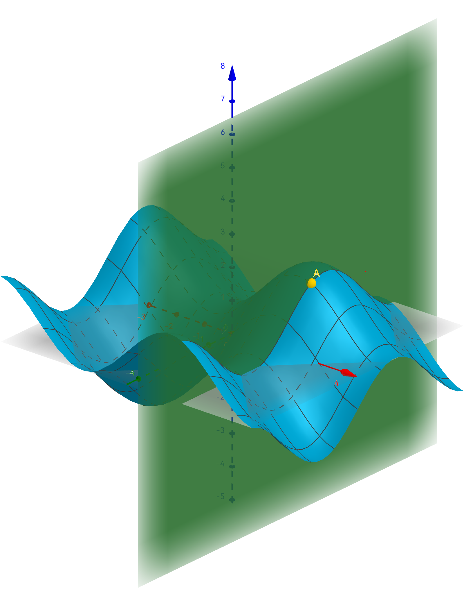 假设红色轴是x轴，绿色轴是y轴（可能被挡住了），蓝色轴是z轴。蓝色曲面是z关于x和y的函数图像。点A在此函数曲面上，它的x、y坐标是(2,1)。此时，要求A点坐标处，z对y的偏导，只需沿着此点作一个平面（即平面x=2），沿y轴方向将函数曲面切开，这样函数曲面就在平面上形成了一个新的曲线，此时再在曲线上求导即可，这时在曲线上，变化的量就只有z和y了，x被视为了常数2。此时即可求出偏导数∂z/∂y 了。 z对x的偏导也是同理： 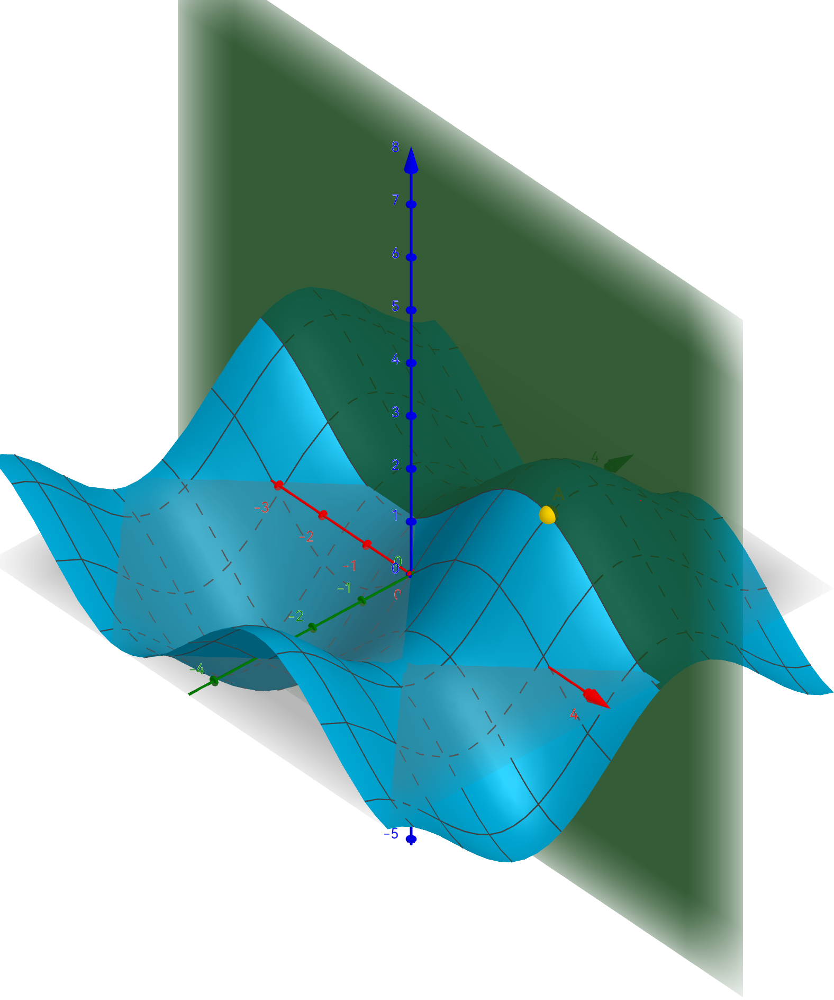 就不再做过多说明了。
回到梯度下降法上，我们在w和b方向上的两个分量，就可以分别写成两个偏导数，即∂loss/∂w 和 ∂loss/∂b 。刚刚的每个分量的长度就等于对应偏导数大小。先不要考虑具体该如何计算这两个偏导数的大小，回到整体目标上，现在，我们就可以轻松地定义梯度了。++梯度的符号是”▽“，读作nabla。当我们说到梯度时，一般就是指所有这些偏导数，通常写成▽C，即▽Cost（代价函数的梯度）的缩写。通常当我们说某个变量的梯度时，就是在说cost或loss对它的偏导数。整个神经网络中，有许多的参数w和b，因此它们中的每一个都有自己的梯度++。
当我们要通过梯度下降优化某个参数w或b时，即可这样更新： n←n-η*▽n 当然，当使用极大似然估计MLE作为代价函数时，就应该是： n←n+η*▽n 例如，要更新一个参数w5， w5←w5-η*▽w5 在训练我们的神经网络时，++每一层的每个神经元的每个权重和偏置参数都要这样进行更新++，来达到最小的误差值。
由于还没有学习如何准确计算梯度的具体值，所以为了能先体验一下梯度下降法，我们先用求导最基础的方法，给一个微小的增量，在我们的代码中，这个增量是有限小的。 下面的示例代码中，仅有一个S型神经元，我们要依次通过梯度下降来更新w和b，直到误差满足我们的要求。 梯度下降法js代码：
w = 1
b = 0
data = [0.4,0.9]//训练数据
rate = 0.6//学习率
train(data)
//S型神经元
function neuron(x){
return 1 / (1 + Math.exp(-(w*x+b)))
}
//均方误差代价函数
function MSE(out, out_hat){
return (out - out_hat) * (out - out_hat) / 2
}
//训练函数
function train(data){
h = 1e-10//求导微小增量
i = 0//训练计数
while(true){
predict0 = neuron(data[0])
cost0 = MSE(data[1], predict0)
console.log("Training Count: "+i+"\nMSE: "+cost0+"\n----------")
if(cost0<=0.001){//训练直到均方误差小于0.001
console.log("Training completed")
break;
}
//分别计算梯度
w += h
predict1 = neuron(data[0])
w -= h
cost1 = MSE(data[1], predict1)
gradient_w = (cost1 - cost0) / h
b += h
predict1 = neuron(data[0])
b -= h
cost1 = MSE(data[1], predict1)
gradient_b = (cost1 - cost0) / h
//分别更新权重和偏置
w -= rate * gradient_w
b -= rate * gradient_b
i++
}
}c++版本：
#include <iostream>
#include <cmath>
double w = 1;
double b = 0;
double neuron(double x){
return 1 / (1 + exp(-(w*x+b)));
}
double MSE(double out, double out_hat){
return (out - out_hat) * (out - out_hat) / 2;
}
void train(double data[]){
double rate = 0.6;
double h = 1e-10;
int i = 0;
while(true){
double predict0 = neuron(data[0]);
double cost0 = MSE(data[1], predict0);
std::cout << "Training Count: " << i << "\nMSE: " << cost0 << "\n----------" << std::endl;
if(cost0 <= 0.001){
std::cout << "Training completed" << std::endl;
break;
}
w += h;
double predict1 = neuron(data[0]);
w -= h;
double cost1 = MSE(data[1], predict1);
double gradient_w = (cost1 - cost0) / h;
b += h;
predict1 = neuron(data[0]);
b -= h;
cost1 = MSE(data[1], predict1);
double gradient_b = (cost1 - cost0) / h;
w -= rate * gradient_w;
b -= rate * gradient_b;
i++;
}
}
int main(){
double data[] = {0.4, 0.9};
train(data);
return 0;
}
//原理注释见上面的js版本下一节中，我们将继续学习如何使用反向传播算法计算梯度值。
在学习本框前，请确保你已了解求导的乘法法则和链式法则，如果还不了解，建议你观看3Blue1Brown的视频，视频链接在本书开头提到了。
我们已经知道，某参数的梯度，就是代价对其的偏导数。反向传播的过程，就是通过链式法则计算这个偏导数。这里我只是先下个定义，方便后面解释，看不懂也没关系，因为我们将会用一种非常巧妙的方式学习反向传播算法，而不是纯粹的去套用公式，因为如果这样你将完全无法感受到反向传播真正的原理。
按照我的经验，如果一个东西很难理解，那举个例子将是最好的办法。这是一个我们已经非常熟悉的神经网络：
 我就不对结构再做解释了。当网络输出了一个预测值a6（代表图中第6个神经元的激活值），使用MSE后，计算出了一个代价值，我们为了降低这个值，需要调整一些参数w和b。我们先将问题简化一下，先不看神经网络和神经元，我们只写出一个简单的y关于x的函数：y=w*x，假设当我输入了x=1，它输出了y=2，而我希望它输出y=3，现在我们的唯一目的就是要让它的输出值不断接近3，我们再将问题转化一下，计算出损失值（不使用任何损失函数以简化）loss=3-2=1，（通常人们习惯写成真实值减去预测值这样）那么我们的目的就变成了去不断尝试减小loss的大小。从这里开始，我们看看如何反向传播这个误差值。
现在误差值为1，为了减小它，我们有两种方案：第一种是将真实值3减小一点，误差当然会减小，但这显然不可行，不然真实值还能叫真实值吗？那么我们也只能去调整预测值的大小了。至此，误差从loss反向传播到了预测值上。
那么，我们现在的阶段目标，就是让预测值变大一点，以减小loss值。为了增大预测值，我们又有了两个方案：第一种是增大w的大小，第二种是增大x的大小。后者显然不可行，因为它是输入值，和真实值同理，是没法修改的。那么我们就明白了，想要减小loss值，就必须要增大w。至于增大多少，其实是取决于x的大小的。请先自己仔细想一想，这是为什么？
其实这时，再用这个式子就不太好理解了，所以我们把它扩展一下：y=w1*x1+w2*x2，这时，假设x1=0.2，x2=0.9，现在希望尽快让y值变大，假设我只允许你将w1或w2中的某一个值增大0.5，那么你会选择优先增大哪个呢？当然是w2了，其实只要算一下就可以知道，若将w1增大0.5，那么y就会增大0.5*x1=0.1，而若将w2增大0.5，y就会增大0.5*x2=0.45。事实上，你可以将其理解为两个参数w在增大y的值这个问题上都有自己的++责任++，只不过由于与w1相乘的系数（因为x不能被优化，所以我将其视为常数，即相应w的系数）较小，让它去承担的责任，效率直接乘以了0.2，而让w2去承担的责任，效率都乘以了0.9，所以为了增加这个整体的优化效率，我们会把++更多的责任分配给++w2去承担。
于是，当y有了err这么多误差需要修改时，我们判定：w1要承担err*x1份责任，w2要承担err*x2份责任，这样，我们仅需再使用梯度下降法，一遍遍更新w1和w2（记得还要乘以适当的学习率）即可不断缩小误差loss的值。
不知你是否察觉到，我们无意中完成了一个偏导和++链式求导++，即loss对w1的偏导和loss对w2的偏导。用链式求导法则的式子写出我们刚刚的全部演算过程，就是（这里我不得不使用y_hat来表示预测值以区分开真实值）：
∂loss/∂w1 = (∂loss/∂y_hat) * (∂y_hat/∂w1) ∂loss/∂w2 =
(∂loss/∂y_hat) * (∂y_hat/∂w2)
如果你已对求导的链式法则和乘法法则足够了解，你会发现，这些式子的计算过程与我们刚刚的逻辑推理过程完全吻合。
根据法则可知，刚刚的 ∂loss/∂y_hat
就等于-1（loss=y-y_hat中，y_hat的系数为-1，根据求导乘法法则即可知偏导就等于这个-1），而∂y_hat/∂w1
就等于x1，最终使用链式法则得到了：∂loss/∂w1 = -1 * x1 = -x1。
说到这里，显然我们已经可以回头再去看看神经网络了。
我就不对结构再做解释了。当网络输出了一个预测值a6（代表图中第6个神经元的激活值），使用MSE后，计算出了一个代价值，我们为了降低这个值，需要调整一些参数w和b。我们先将问题简化一下，先不看神经网络和神经元，我们只写出一个简单的y关于x的函数：y=w*x，假设当我输入了x=1，它输出了y=2，而我希望它输出y=3，现在我们的唯一目的就是要让它的输出值不断接近3，我们再将问题转化一下，计算出损失值（不使用任何损失函数以简化）loss=3-2=1，（通常人们习惯写成真实值减去预测值这样）那么我们的目的就变成了去不断尝试减小loss的大小。从这里开始，我们看看如何反向传播这个误差值。
现在误差值为1，为了减小它，我们有两种方案：第一种是将真实值3减小一点，误差当然会减小，但这显然不可行，不然真实值还能叫真实值吗？那么我们也只能去调整预测值的大小了。至此，误差从loss反向传播到了预测值上。
那么，我们现在的阶段目标，就是让预测值变大一点，以减小loss值。为了增大预测值，我们又有了两个方案：第一种是增大w的大小，第二种是增大x的大小。后者显然不可行，因为它是输入值，和真实值同理，是没法修改的。那么我们就明白了，想要减小loss值，就必须要增大w。至于增大多少，其实是取决于x的大小的。请先自己仔细想一想，这是为什么？
其实这时，再用这个式子就不太好理解了，所以我们把它扩展一下：y=w1*x1+w2*x2，这时，假设x1=0.2，x2=0.9，现在希望尽快让y值变大，假设我只允许你将w1或w2中的某一个值增大0.5，那么你会选择优先增大哪个呢？当然是w2了，其实只要算一下就可以知道，若将w1增大0.5，那么y就会增大0.5*x1=0.1，而若将w2增大0.5，y就会增大0.5*x2=0.45。事实上，你可以将其理解为两个参数w在增大y的值这个问题上都有自己的++责任++，只不过由于与w1相乘的系数（因为x不能被优化，所以我将其视为常数，即相应w的系数）较小，让它去承担的责任，效率直接乘以了0.2，而让w2去承担的责任，效率都乘以了0.9，所以为了增加这个整体的优化效率，我们会把++更多的责任分配给++w2去承担。
于是，当y有了err这么多误差需要修改时，我们判定：w1要承担err*x1份责任，w2要承担err*x2份责任，这样，我们仅需再使用梯度下降法，一遍遍更新w1和w2（记得还要乘以适当的学习率）即可不断缩小误差loss的值。
不知你是否察觉到，我们无意中完成了一个偏导和++链式求导++，即loss对w1的偏导和loss对w2的偏导。用链式求导法则的式子写出我们刚刚的全部演算过程，就是（这里我不得不使用y_hat来表示预测值以区分开真实值）：
∂loss/∂w1 = (∂loss/∂y_hat) * (∂y_hat/∂w1) ∂loss/∂w2 =
(∂loss/∂y_hat) * (∂y_hat/∂w2)
如果你已对求导的链式法则和乘法法则足够了解，你会发现，这些式子的计算过程与我们刚刚的逻辑推理过程完全吻合。
根据法则可知，刚刚的 ∂loss/∂y_hat
就等于-1（loss=y-y_hat中，y_hat的系数为-1，根据求导乘法法则即可知偏导就等于这个-1），而∂y_hat/∂w1
就等于x1，最终使用链式法则得到了：∂loss/∂w1 = -1 * x1 = -x1。
说到这里，显然我们已经可以回头再去看看神经网络了。
如果我们使用MSE作为代价函数，根据幂函数的求导可知，一个数的平方的导数就等于2乘以这个数，比如x^2的导数等于2x。在反向传播中，我们可以每次仅使用一个训练数据（++注意，在普通梯度下降法中，我们将所有训练数据分别前向传播得到相应的一堆预测值，再反向传播得到每个权重和偏置的梯度值，这期间我们并不调整神经网络的任何参数，而是把每次反向传播得到的每个权重和偏置的梯度存下来，所有数据全部正、反向传播后，对于每个权重和偏置参数，我们都有它的好几个梯度值，也就是每个训练数据反向传播算出来的梯度值，我们将其相加并求平均，作为最终参与优化这个参数的梯度，下一框中我们还会学习更有效的一种梯度下降法，请务必不要混淆++），于是代价或者说损失值就可以写成： (1/2) * (y-y_hat)^2 求导时，乘以2和二分之一就约分掉了，因此其导数就是y-y_hat，而求y-y_hat对y_hat的偏导就得到了-1，再链式求导，最终得到MSE值对y_hat的偏导就是-1(y-y_hat)即y_hat-y，十分完美。 我们继续将误差反向传播，假设神经元都使用Sigmoid激活函数（后面简写为S(n)），那么其输出的激活值S(n)的导数就是 S(n)*(1/S(n))* ，它的证明过程如果你感兴趣可以自己研究一下，但它不是今天的重点，我们还要让误差继续反向传播。 刚刚式子中的n可以展开为∑i wi*xi+b ，这时我们已经看到了第一批需要更新的参数，每个w的偏导就是其对应的x的值，而b的偏导则是1，因为它的系数就是1。 例如，假设输出层某神经元中有一个权重参数w8和偏置参数b6，那么它们的梯度就是： ▽w8 = ∂loss/∂w8 = (∂loss/∂y_hat) * (∂y_hat/∂n) * (∂n/∂w8) = (y_hat-y) * S(n)*(1-S(n)) * x8
▽b6 = ∂loss/∂b6 = (∂loss/∂y_hat) * (∂y_hat/∂n) * (∂n/∂b6) = (y_hat-y) * S(n)*(1-S(n)) * 1
这样，我们就可以++计算出隐藏层全部参数的梯度++了。不过，++∑i wi*xi+b 中的每个x其实也可以被间接地修改++，因为这里的x就是上一层所连接的神经元的输出值，而++那个神经元上也有一些w和b参数需要计算梯度++，因此，我们可以++将误差继续反向传播到上一层++（隐藏层）。 对于这个隐藏层，我们以上图的3号神经元为例，它的输出值正向传播到了6号神经元上，所以6号神经元的误差也有一部分反向传播到了3号上。这时候再用公式表达3号神经元各个参数的梯度，就非常简单了。假设连接3号神经元和6号神经元的权重是w36，连接3号神经元和输入层神经元x1的权重是w13，3号神经元的激活值是a3，6号神经元激活之前的值（∑i wi*xi+b）是n6，3号激活前的值是n3，那么w13的梯度就是： ▽w13 = ∂loss/∂w13 = (∂loss/∂a3) * (∂a3/∂w13) = (∂loss/∂y_hat) * (∂y_hat/∂n) * (∂n6/∂a3) * (∂a3/∂n3) * (∂n3/∂w13) = (y_hat-y) * S(n6)*(1-S(n6)) * w36 * S(n3)*(1-S(n3)) * x1
最后再说一下，++如果有多个输出神经元，那么在反向传播时上一个隐藏层会调用这些神经元传播过来的误差梯度的平均值++，可以理解为每个输出神经元对如何更改上一层神经元的参数都有自己的想法，那么取均值就可以了。这一点我们将在下一章节中详细讲解。
++使用反向传播算法训练的神经网络都可以称为BP神经网络（Back Propagation Neural Network / BPNN）++。
我想，这些应该已经足够帮助我们理解反向传播算法了。但现在我们还不能写出完整代码，我们要先再学习一下”随机梯度下降法”。
在前两框的学习中，你可能已经发现了一个问题：神经网络并不是只针对一个训练数据去调整参数来拟合它，而是要同时拟合很多数据，并尽可能精准地对新数据进行预测。那么，对于每一个训练数据，都会产生一个误差损失代价值，每个数据对如何调整各个神经元上的参数都有自己的想法。那么如何调整这些参数，才能同时满足每个数据的要求呢？或者说，对于某个参数w或b，有n个训练数据，每个训练数据反向传播到w或b后，都使w、b有了自己的一个梯度，例如，第一个训练数据误差反向传播到w上，得到了▽w[1]，第二个训练数据传播后得到的是▽w[2]，那现在该如何优化w呢？ 按照传统的普通梯度下降法，我们应该计算这些梯度的平均值，那么更新w的方式就是： w←w-(∑t ▽w[t])/n 其中t代表正在使用第t个训练数据得到梯度，n是数据总个数。 但我们很快会意识到这是完全没有任何可执行性的。比如，一个数据想让w小一点，另一个想让它大一点，梯度一正一负抵消了一部分，最后相当于取了个平均值，没有拟合其中任何一个数据，只是一定程度使误差减小了一点点（可以理解为陷入代价函数的局部最优（低）点）。 于是，随机梯度下降法（Stochastic Gradient Descent / SGD） 出现了。这次，我们++每次训练（下降）仅使用1个数据++，我们向神经网络扔进去一个训练数据输入值，向前传播得到预测值，再将这一个数据的损失值反向传播，得到每个权重和偏置的梯度，这次我们不会保存这些梯度，而是算出来一个参数的梯度马上就更新优化这个参数，直到把每层神经元每个参数都这样遍历更新一遍。训练完这一个数据后，再去找另一个数据训练，如此反复。这样，++把所有样本也就是训练数据集中的全部数据都单独训练一遍++，用公式表达是这样： 循环进行: w←w-▽w[t]
比较一下两种梯度下降训练方法的差异，如果将loss-train图像（损失值随着训练数据增加的变化）画出来，两种梯度下降法训练统计后图像大概与下图相似： 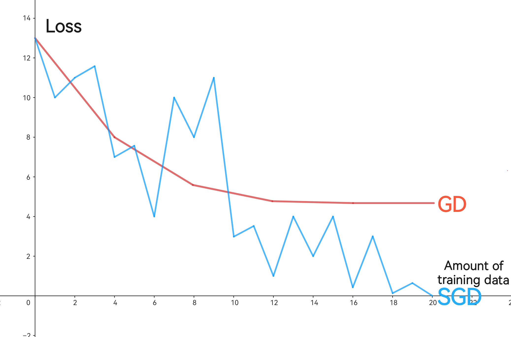 蓝色是随机梯度下降法的训练效果，红色是普通的梯度下降法。总计有4个需要训练的数据，普通梯度下降中一次训练（下降）会同时依据4个数据进行更新优化参数，而SGD每次梯度下降都只针对一个数据进行优化，因此呈现出了非常抖动且不稳定的样子。但事实证明，尽管如此，SGD还是能更好的减小损失值（即收敛）。
SGD让神经网络的规模性训练由理论变成了可能。现在，我们就可以给出完整的一个神经网络训练和预测的完整的代码了。
注意：js和c++代码中的e表示的是科学计数法，如1e-5表示1乘以10的-5次方，请注意与常数e区分开，这里和对数没有关系。
js版本：
//随意初始化神经网络参数
network = [
//一个隐藏层4个神经元
[
[[0.1,0.7],0.1],
[[0.4,0.8],0.9],
[[0.7,0.1],0.6],
[[0.1,0.4],0.5]
],
//输出层2个神经元
[
[[0.3,0.4,0.5,0.2],0.6],
[[0.3,0.4,0.5,0.2],0.6],
]
]
//暂存神经网络全部神经元当前的激活值以便反向传播调用
networkn = [
[0,0,0,0],
[0,0]
]
//暂存神经网络全部神经元激活前的∑wx+b的值以便反向传播调用
networkb = [
[0,0,0,0],
[0,0]
]
//一个神经元
function Neuron(w, x, b) {
//使用LeakyRelu作为激活函数（后续会学习）
function leakyRelu(x) {
if (x >= 0) {
return x;
}else{
return 0.1 * x;
}
}
//求和∑wx+b
function sigma(w, x, b) {
return w.reduce((acc, curr, i) => acc + curr * x[i], 0) + b;
}
sum = sigma(w, x, b)//激活前的值
return [sum,leakyRelu(sum)];
}
//LeakyRelu的导数以便反向传播调用
function leakyReluDerivative(x) {
if (x >= 0) {
return 1;
}else{
return 0.1;
}
}
//单个数据均方误差
function MSE(out, out_hat){
return (out_hat - out) * (out_hat - out) / 2;
}
//均方误差的导数
function MSEDerivative(out, out_hat){
return out_hat - out
}
//预测-向前传播
function predict(content){
//向前传播至隐藏层
for(m=0;m<=networkn[0].length-1;m++){
r0 = Neuron(network[0][m][0],content,network[0][m][1])
networkb[0][m] = r0[0]//未激活值
networkn[0][m] = r0[1]//激活值
}
//向前传播至输出层
for(n=0;n<=networkn[1].length-1;n++){
r1 = Neuron(network[1][n][0],networkn[0],network[1][n][1])
networkb[1][n] = r1[0]//未激活值
networkn[1][n] = r1[1]//激活值
}
return networkn[1];
}
//训练-反向传播-随机梯度下降
function trainNet(dt){
out_hat = predict(dt[0])//预测
MSError = 0
//计算损失值MSE用于检查训练效果
for(l=0;l<=out_hat.length-1;l++){
MSError += MSE(dt[1][l], out_hat[l])
}
//为每个神经元分别计算学习率乘以损失值对输出层神经元未激活值的偏导，减轻后续计算量
rMEdN = []
for(l=0;l<=out_hat.length-1;l++){
rMEdN.push(rate * MSEDerivative(dt[1][l], out_hat[l]) * leakyReluDerivative(networkb[1][l]))
}
//再计算上面的每个结果的均值，作为每个输出层神经元对如何调整隐藏层所有参数的希望的均值进行反向传播
rMEdNA = rMEdN.reduce((acc, curr) => acc + curr, 0) / rMEdN.length
//更新输出层权重
for(p=0;p<=networkn[1].length-1;p++){
for(q=0;q<=network[1][p][0].length-1;q++){
network[1][p][0][q] -= rMEdN[p] * networkn[0][q]
}
}
//更新输出层偏置
for(p=0;p<=networkn[1].length-1;p++){
network[1][p][1] -= rMEdN[p]
}
//更新隐藏层权重
for(p=0;p<=networkn[0].length-1;p++){
for(q=0;q<=network[0][p][0].length-1;q++){
network[0][p][0][q] -= rMEdNA * network[1][0][0][p] * leakyReluDerivative(networkb[0][q]) * dt[0][q]
}
}
//更新隐藏层偏置
for(p=0;p<=networkn[0].length-1;p++){
network[0][p][1] -= rMEdNA * network[1][0][0][p] * leakyReluDerivative(networkb[0][p])
}
return MSError;
}
function train(dt){
var start = Date.now()
i = 0
while(true){
i++
err = 0
//梯度下降针对每个训练数据进行更新优化参数
for(c=0;c<=dt.length-1;c++){
preErr = trainNet(dt[c])//梯度下降一次
err += preErr
}
//判断损失值是否满足要求即小于等于目标损失值
if(err<=aim){
var elapsed = Date.now() - start;//训练耗时统计
console.info("Training completed with err <= "+aim+" ("+err+")")
console.log(">>> finished "+dt.length*i+" steps ("+i+" rounds) gradient descent in "+elapsed+"ms <<<")
break;
}else{
console.error("Round: "+i+" Training: "+dt.length*i+" MSE: "+MSError)
}
}
}
rate = 0.17//学习率
aim = 1e-5//目标损失值
train([
[[1,1],[0,0]],
[[0,0],[1,1]],
[[0,1],[1,0]],
[[1,0],[0,1]],
])//训练四个训练数据
console.log(predict([1,0]))//预测结果接近0,1c++版本：
#include <iostream>
#include <vector>
#include <cmath>
using namespace std;
//全局变量
std::vector<std::vector<std::vector<std::vector<double>>>> network;//由于c++的vector不允许像js的数组一样随意在每层嵌套不同类型数据（即c++中的vector和double），所以必须给偏置系数外加一个{}，使它也成为vector，具体见main函数network赋值处
std::vector<std::vector<double>> networkn;
//暂存神经网络全部神经元当前的激活值以便反向传播调用
std::vector<std::vector<double>> networkb;
//暂存神经网络全部神经元激活前的∑wx+b的值以便反向传播调用
double rate;//学习率
double aim;//目标损失值
//一个神经元
vector<double> neuron(std::vector<double> w, std::vector<double> x, double b) {
//使用LeakyRelu作为激活函数（后续会学习）
auto leakyRelu = [](double x) {
if (x >= 0) {
return x;
}
else {
return 0.1 * x;
}
};
//求和∑wx+b
auto sigma = [&w, &x, b]() {
double sum = 0;
for (int i = 0; i < w.size(); ++i) {
sum += w[i] * x[i];
}
return sum + b;
};
double sum = sigma();//激活前的值
return { sum,leakyRelu(sum) };
}
//LeakyRelu的导数以便反向传播调用
double leakyReluDerivative(double x) {
if (x >= 0) {
return 1;
}
else {
return 0.1;
}
}
//单个数据均方误差
double MSE(double out, double out_hat) {
return (out_hat - out) * (out_hat - out) / 2;
}
//均方误差的导数
double MSEDerivative(double out, double out_hat) {
return out_hat - out;
}
//预测-向前传播
vector<double> predict(vector<double> content) {
//向前传播至隐藏层
for (int m = 0; m <= networkn[0].size()-1; m++) {
auto r0 = neuron(network[0][m][0], content, network[0][m][1][0]);//与js版本不同，最后面要加上[0]，原因见全局变量声明处，下同
networkb[0][m] = r0[0];//未激活值
networkn[0][m] = r0[1];//激活值
}
//向前传播至输出层
for (int n = 0; n <= networkn[1].size()-1; n++) {
auto r1 = neuron(network[1][n][0], networkn[0], network[1][n][1][0]);
networkb[1][n] = r1[0];//未激活值
networkn[1][n] = r1[1];//激活值
}
return networkn[1];
}
//训练-反向传播-随机梯度下降
double trainNet(vector<vector<double>> dt) {
std::vector<double> out_hat = predict(dt[0]);//预测
double MSError = 0;
//计算损失值MSE用于检查训练效果
for (int l = 0; l <= out_hat.size() - 1; l++) {
MSError += MSE(dt[1][l], out_hat[l]);
}
//为每个神经元分别计算学习率乘以损失值对输出层神经元未激活值的偏导，减轻后续计算量
std::vector<double> rMEdN;
for (int l = 0; l <= out_hat.size() - 1; l++) {
rMEdN.push_back(rate * MSEDerivative(dt[1][l], out_hat[l]) * leakyReluDerivative(networkb[1][l]));
}
//再计算上面的每个结果的均值，作为每个输出层神经元对如何调整隐藏层所有参数的希望的均值进行反向传播
double sum = 0;
for (int i = 0; i < rMEdN.size(); i++) {
sum += rMEdN[i];
}
double rMEdNA = 0;
if (rMEdN.size() > 0) {
rMEdNA = sum / rMEdN.size();
}
//更新输出层权重
for (int p = 0; p <= networkn[1].size() - 1; p++) {
for (int q = 0; q <= network[1][p][0].size() - 1; q++) {
network[1][p][0][q] -= rMEdN[p] * networkn[0][q];
}
}
//更新输出层偏置
for (int p = 0; p <= networkn[1].size() - 1; p++) {
network[1][p][1][0] -= rMEdN[p];
}
//更新隐藏层权重
for (int p = 0; p <= networkn[0].size() - 1; p++) {
for (int q = 0; q <= network[0][p][0].size() - 1; q++) {
double averagenN = 0;
for (int s = 0; s <= network[1].size() - 1; s++) {
averagenN += network[1][s][0][p];
}
averagenN = averagenN / network[1].size();
network[0][p][0][q] -= rMEdNA * averagenN * leakyReluDerivative(networkb[0][q]) * dt[0][q];
}
}
//更新隐藏层偏置
for (int p = 0; p <= networkn[0].size() - 1; p++) {
double averagenN = 0;
for (int s = 0; s <= network[1].size() - 1; s++) {
averagenN += network[1][s][0][p];
}
averagenN = averagenN / network[1].size();
network[0][p][1][0] -= rMEdNA * averagenN * leakyReluDerivative(networkb[0][p]);
}
return MSError;
}
void train(vector<vector<vector<double>>> dt) {
// start = Date.now()
int i = 0;
while (true) {
i++;
double err = 0;
//梯度下降针对每个训练数据进行更新优化参数
for (int c = 0; c <= dt.size() - 1; c++) {
double preErr = trainNet(dt[c]);//梯度下降一次
err += preErr;
}
//判断损失值是否满足要求即小于等于目标损失值
if (err <= aim) {
//var elapsed = Date.now() - start;//训练耗时统计
std::cout << "Training completed with err <= " << aim << " (" << err << ")" << std::endl;
std::cout << ">>> finished " << dt.size() * i << " steps (" << i << " rounds) gradient descent in " << /*elapsed + */"ms <<<" << std::endl;
break;
}
else {
std::cout << "Round: " << i << " Training: " << dt.size() * i << " loss: " << err << std::endl;
}
}
}
int main() {
//赋值
network = {
{
{{0.1, 0.7}, {0.1}},
{{0.4, 0.8}, {0.9}},
{{0.7, 0.1}, {0.6}},
{{0.1, 0.4}, {0.5}}
},
{
{{0.3, 0.4, 0.5, 0.2}, {0.6}},
{{0.3, 0.4, 0.5, 0.2}, {0.6}}
}
};//偏置系数定义方法与js版本不同，原因见全局变量声明处
networkn = {
{0, 0, 0, 0},
{0, 0}
};
networkb = {
{0, 0, 0, 0},
{0, 0}
};
rate = 0.17;//学习率
aim = 1e-10;//目标损失值
train({
{ {1, 1} ,{0, 0}},
{ {0, 0} ,{1, 1}},
{ {0, 1} ,{1, 0}},
{ {1, 0} ,{0, 1}},
});//训练四个训练数据
std::cout << predict({0, 0})[0] << " " << predict({ 0, 0 })[1] << std::endl;//预测结果接近1,1
return 0;
}到了现在，你可能会有感受，使用c++实现神经网络在写代码时可能异常困难，但其计算速度是无可匹敌的。这一点在后续学习中会更为明显，c++中，你需要考虑并仔细设计数据结构、精度与底层资源分配等，这些通常是js、python等语言不需要也不能实现的，然而对于深度神经网络的训练及其重要。令我比较震撼的是，在我为这本书重新编写并测试性地训练一个手写识别神经网络模型时，我先写了js版本方便自己理解，然后找了几款原生js的IDE测试，仅仅10个训练数据一次梯度下降最少耗费1-2分钟，而在VS上运行改写好的c++时，每秒可以完成100多次梯度下降。 总之，我在本书开头写过，js更贴近数学表达式而且非常简洁，很方便我们理解一些简单概念，而到最后，想要做出真正的大模型（而不消耗太多资源）我们必然需要使用c++。其实c++没有想象中的那样困难和复杂，我经常直接将js代码整段复制到c++编译器中，然后要做的，无非只是引入头文件，做一些定义，再给每个变量定好类型，把js一些函数改成c++对应的，最后根据编译器报错改一改小bug即可。
在以上学习中，有几个误区。虽然在学习过程中我们已经提到了，但我还是想专门再集中地强调一下，因为有时候我们太专注于公式和代码，以至于忘记了它的来源，这不利于我们更深刻的学习和理解神经网络与深度学习。
1.神经网络本身可以理解为输出值关于输入值的函数，向前传播（前馈）时w和b是系数，反向传播时w和b是自变量。神经网络的预测函数不是隐函数或方程，平面中的闭合图像是三维预测函数在平面（高度为0）上的投影，通常用不同颜色代表高度，而闭合的线是三维预测函数与平面的相交线。 2.使用反向传播算法的神经网络都可叫做BP神经网络，但不是所有神经网络都使用反向传播算法和梯度下降法训练。大部分神经网络都属于前馈神经网络。MLP、FCNN、BPNN和各种NN不都只是并列关系，一个神经网络可以根据其结构、使用的算法等来获得多个名字。 3.普通梯度下降法在反向传播时是把每个训练数据都进行一次反向传播，计算出的梯度取平均值（++不是++把所有数据的误差一起传播到神经网络最后再取输入值的平均值在第一个隐藏层算梯度！）；随机梯度下降法只要传播完一个数据就立刻更新神经网络的所有参数。反向传播实际使用时可以把所有梯度都算出来再统一更新，也可以每算一个梯度就更新一个参数（大模型节省运存）。 4.无论有多少个参数，一个数据仅需反向传播一次。如果不采用反向传播算法而是通过微小增量来算偏导数，那么有多少个参数就要向前传播多少次。因此反向传播算法可以节省几乎无数倍的资源。
最后，十分建议你再从头把本章全部带下划线和粗体的字浏览一遍，有助于从全局、整体角度理解神经网络。
Sigmoid和Tanh激活函数都有一个问题：会导致梯度消失。 先回想一下梯度，当我们在计算一个神经元的激活值对其未激活的值的偏导时需要对激活函数求导，如sigmoid的导数就是sigmoid(x)*(1-sigmoid(x))，观察它（绿色部分）和它的导数（蓝色部分）的图像： 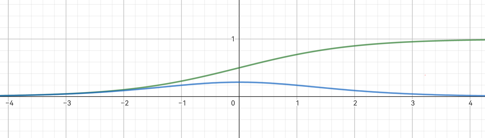
会发现，sigmoid仅在输入值靠近0时，输出值有较大的变化，如果在0的左侧很远，输出值接近0，如果在0的右侧很远，输出值接近1，因此，其导数也是仅在0附近较大，远了之后导数值几乎就没有了，并且在0点时的导数的最大值也仅有0.25而已。这意味着什么？ 如果神经元全都用sigmoid作为激活函数，那就意味着，反向传播时，会有许多个接近0的数相乘，那么计算出的梯度值也接近0，可想而知，当神经网络层数增加，这个问题也会更加严重，甚至在精度不高时可能会直接被编译器视为0。这就是梯度消失（Vanishing Gradient）。 Tanh激活函数对此稍有改进，但本质上也会在输入值离0远时导数接近于0。
于是，ReLU激活函数到来了，还记得它的图像和表达式吗？当输入小于0，返回0，输入大于0，返回输入值本身。因此，当输入小于0，导数就是0，输入大于0，导数就是1。这样看上去可以避免梯度消失了，因为大于0时导数恒为1。而且我们甚至不需要具体进行计算，直接将输入值与0比大小就能判断其导数是0还是1。这样，一次性就能知道需要更新哪些神经元。
但是新问题又来了，而且非常非常明显，小于0就直接输出0，看起来就有些粗暴。事实上，一个异常输入值就可以摧毁这个神经元。我们来看看到底发生了什么： 现在有一个神经元，使用ReLU激活函数，现在许多正常输入值进入了神经元，神经元wx+b求和后值大于0，于是直接输出求和的值本身。但这时来了一个异常大的输入值，如x1=100，然后求和后输出值也很大，例如200，但是目标输出值是1，这时候在相应的w上产生的梯度非常非常大，如100，乘以学习率后将w进行了更新，这时w就被更新成了一个非常非常小的值，如-50，现在再输入一些正常的输入值，如0.3，0.9等，求和后的值就很可能小于0了，这时再输入到ReLU中，就会输出0，并且其导数也是0，就意味着此神经元的全部参数w和b的梯度都是0，那么它将永远无法被更新（因为除非又来一个异常输入，它永远没有任何梯度），至此，这个神经元永久性死亡了。本质上又回到了梯度消失问题上。
为了解决这个问题，我们可以使用其变体衍生而来的Leaky
ReLU（泄露修正线性单元） 作为激活函数。Leaky
ReLU（红色部分）与ReLU（蓝色部分）的函数图像如下： 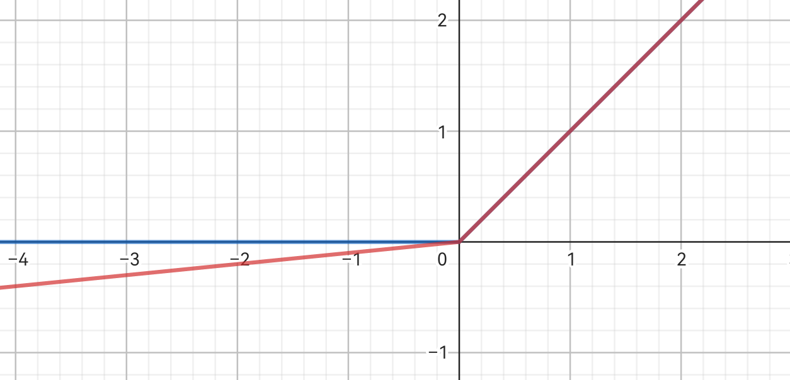 Leaky ReLU的表达式是：  其中α是你可以自由修改的常数，可以是0.1，0.05，0.01等，它决定了函数输入值小于0部分的射线图像的斜率。看图即可得知，Leaky
ReLU不含有导数为0或无限接近0的部分，输入值大于0导数就是1，输入值小于0导数就是α，因此就无需担心神经元永久性死亡问题了。
这里还是很好理解的，就不再写代码了。
其中α是你可以自由修改的常数，可以是0.1，0.05，0.01等，它决定了函数输入值小于0部分的射线图像的斜率。看图即可得知，Leaky
ReLU不含有导数为0或无限接近0的部分，输入值大于0导数就是1，输入值小于0导数就是α，因此就无需担心神经元永久性死亡问题了。
这里还是很好理解的，就不再写代码了。
当然，后来又出现了更多好用的激活函数，许多都是由ReLU变形而来的。如下面的ELU（Exponential Linear Unit / 指数线性单元） 激活函数。 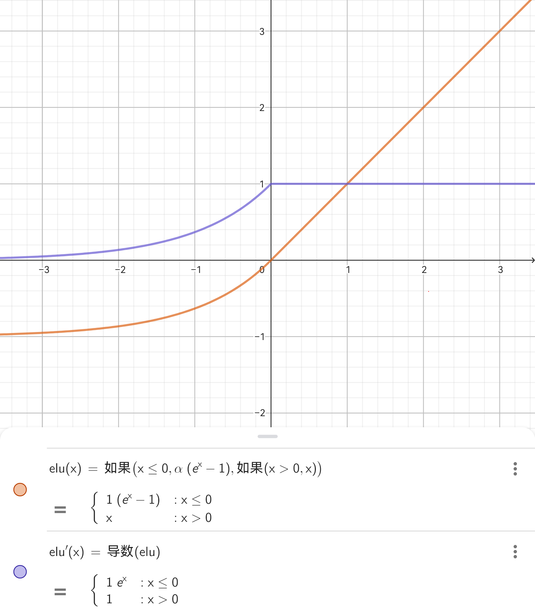 橙色是ELU函数图像，紫色是其导数。α与上述作用相似（通常为1）。可以看到，ELU不会导致神经元死亡。同ReLU一样，ELU在输入正常范围（以及全部大于0的范围）内也不会有梯度消失问题，而且Leaky ReLU在α接近1时会接近于直线，因此在复杂的训练中有一定困难。与之相比，ELU显然更加圆滑。ELU具有ReLU的全部优点，虽然小于0的部分的计算量稍大，但仍然不妨碍其成为十分受欢迎的激活函数之一。 js版本：
function elu(x) {
if (x >= 0) {
return x;
} else {
return 1.0 * (Math.exp(x) - 1);
}
}
function elu_derivative(x) {
if (x >= 0) {
return 1;
} else {
return 1.0 * Math.exp(x);
}
}c++版本：
auto elu = [](double x) {
if (x >= 0) {
return x;
} else {
return 1.0 * (exp(x) - 1);
}
};
double elu_derivative(double x) {
if (x >= 0) {
return 1;
} else {
return 1.0 * exp(x);
}
}最后，我突然想起还有一件事一直没交代，这本书正好写到这里，就顺便说一下。 你应该已经在本书见到不少的”e”了。可能大部分读者已知道，e不仅仅是一个约等于2.718281828459的无理数，它是自然对数函数的底数，换句话说，e^x 的导数就是e^x 它本身，因为e就是这么被定义来的。我想说的是，你应该时刻记得，大部分神经网络算法函数中涉及到e肯定是为了方便我们在反向传播时求导。不然难道Sigmoid、ELU的导数是巧合吗？
更多激活函数，我们后续会继续学习。
你可能听说过”熵”这个概念。熵（Entropy） 是一个描述系统混乱程度的量度（最初用于热力学，后发展到更广的数学领域），具体来讲，一堆纸牌，将它们按照某个规律有序地摆放好，那么这个纸牌系统的混乱程度就较小，也就是熵较小；如果将它们全部打乱，那么混乱程度增加，熵增加。现在我们只是定性地描述了这个概念，而没有定量地计算某个系统的熵，要想继续学习熵，我们就需要先学习一下什么是信息量。
信息量（amount of information），顾名思义，大概是在表示某件事或者某个东西对于某人来说价值大小。举个例子，就现在而言，我突然对你说：“你知道吗？1+1=2”，那么”1+1=2”这件事就现在而言对你来说信息量应该不大；而我如果立刻告诉了你什么是”交叉熵函数”，对你来说信息量应该更大一些。我们都能做出这样的对信息量大小的判断，但依据是什么呢？ 仔细观察这两件事，你认为”1+1=2”的信息量不大，是不是因为你已经知道这件事了？而假设（仅仅是假设）你还不知道这件事，或者对此不太确定，那么我现在下了这个”1+1=2”的结论，对你来说信息量应该就更大一些了。关键点就在于你对这件事是否很确定，换句话说，就是在我告诉你这件事是正确的之前，你认为这件事正确的概率是多少。如果你觉得这个概率很大，那我再对此加以肯定，这个信息量就不大，反之信息量就大了。 再举个数字上的例子，但这回要抽象一点了：事件A发生的概率是99%，事件B发生的概率是10%，那么事件A如果真的发生了，那么信息量并不大，如果事件B真的发生了，那么信息量会更大。下面我们就看一看具体该如何计算信息量。 现在有一个事件C发生的概率是99%，那么它不发生的概率自然就是1%了，如果发生了，信息量很小，如果没发生，信息量很大。现在如果只看这一件事，确实很难理解信息量是如何计算的。其实，信息量是一个被人定义出来的东西，并不是什么自然界中原本存在的量，所以我们在理解信息量时，不能总去想为什么它是某个样子，而应该思考如何能使信息量这个概念成为一个能普遍计算的量。首先，看刚刚说的这个事件C。我们假设又出现了一个事件D，它发生和不发生的概率都是50%。那么事件C和D同时发生的概率就表现为概率相乘，即 99%*50% ，你也可以理解为条件概率，但我暂时还不会这样写。这两件事如果同时发生，它们是不是也有一个同时发生的信息量？现在人们都迫切希望，两件事同时发生的信息量是两件事其中每一件事发生的信息量之和，即C和D同时发生的信息量等于C发生的信息量加上D发生的信息量。至于为什么，就像刚刚说的，它是被这样人为定义的，目的也是方便计算。可是问题来了，事件同时发生表现为两件事发生的概率相乘，怎样把它变成相加呢？ 这时候就要用到log运算了，可能你已经知道它的作用了，但这里再简单讲一下。 log是取对数运算，对数是对求幂的逆运算。loga(x)，即如果a的x次方等于N（a>0，且a≠1），那么数x叫做以a为底N的对数，换句话说，loga(x)就是在求a的几次方等于x，如log2(8)就是在求2的几次方等于8，结果为3，即2的3次方等于8。 log可以把相乘变为相加，即log(A*B)=log(A)+log(B)，这里的log以谁为底数都是等效的。比如log(4*8)=log(4)+log(8)，比如以2为底，那么log(4)的意思就是2的几次方是4，计算结果就是2，log(8)意思就是2的几次方是8，结果就是3，而log(4*8)也就是log(32)的意思就是2的几次方是32，计算结果就是5，然后我们就发现了，2+3=5，即log(4*8)=log(4)+log(8)。原理也很好理解，就是x^a * x^b = x^(a+b)，即一个数的a次方再乘以这个数的b次方就等于这个数的a+b次方，这应该是小学或者初中的知识了。 现在我们知道了为了使得事件C和D同时发生的信息量等于C发生的信息量加上D发生的信息量，这个信息量的计算一定会用上log运算，比如C发生的概率是99%也就是0.99，那么它的信息量的表达式中应包含log(0.99)这一项，现在还剩两个问题：第一是log应该以谁为底数，第二是log前面的系数或者说这个log运算后还需不需要再乘以某个量。 对于第一个问题，其实log以谁为底在理论上都等价（不是说计算结果相等，而是说都可以达到我们的目标效果）。但实际中，在上一框我已经讲过，为了在反向传播中方便对损失代价函数求导，通常神经网络中的log会选择以e为底（log以e作为底数即loge(x)通常会写成ln(x)，l是log的缩写，n就是e的缩写，即自然对数英文中的Natural一词的缩写），这样你会发现一件有趣的事，ln(x)的导数就等于 1/x ，在计算中非常方便，具体证明可以在网上找到（如果你对此感兴趣）。 对于第二个问题，我们要先观察一下函数y=ln(x)在平面直角坐标系xOy中的函数图像： 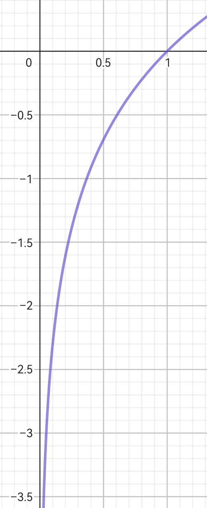 可以看出，在输入x在0到1之间时，输出y一直是负数，而我们知道概率就是在0到1之间的，为了使输出为正数，这里要在ln前加上负号即乘以-1，即-ln(x)。 至此，我们掌握了信息量的计算方法：若事件发生的概率为p，则该事件发生的信息量=-ln(p)。 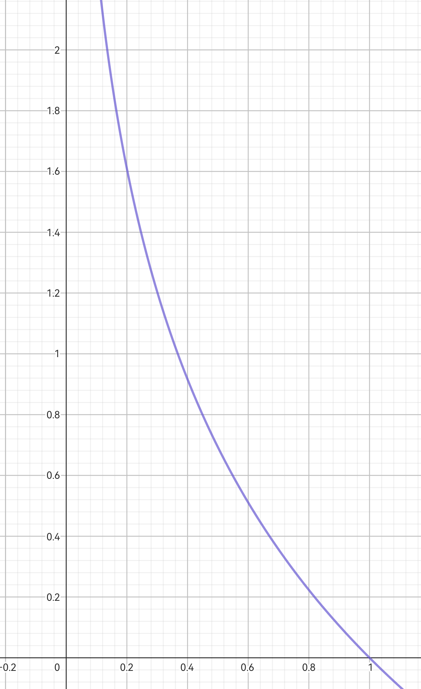
观察新的y=-ln(x)图像可以看出，这确实很符合我们最初的希望：当事件发生概率小，发生带来的信息量很大；当事件发生概率大，发生带来的信息量很小。
接下来我们回到熵的概念上，熵表示系统混乱程度，当某个系统总给我们带来很大的信息量，说明这个系统的混乱程度很高，熵大。例如，比赛胜利的可能性是50%，失败的可能性也是50%，那么混乱程度就高；反之，如果胜利的可能性是99.99%，失败的可能性是0.01%，那么混乱程度就很低，因为胜利似乎像是一件几乎注定的事情。那么如何把熵和信息量联系起来？直接相加其实是不行的，比如，事情发生概率为1%，那么它发生所带来的信息量一定很大，而问题在于，这件事很可能就没有发生，如果它没有发生，那为什么还要把它的信息量全加进来呢？所以这里需要再将发生的信息量乘以发生的概率，因为只有它真的发生了，才会带来这么多的信息量。所以最终的熵，应该是事件发生的概率乘以发生概率对应的信息量 再加上 事件不发生的概率乘以不发生概率对应的信息量，用公式写出来可能更令人愉快一点：若事件发生的概率为0.9，则不发生的概率为0.1，所以它的熵为 0.9*-ln(0.9)+0.1*-ln(0.1) 我们整理下公式，得到普遍性结论：若事件发生的概率为p，则熵为 -p*ln(p)-(1-p)*ln(1-p) 这里我把ln前的负号提到前面了，并且用1-p表示不发生的概率，因为这里我们在讨论二分类问题（二元事件系统）。 这真是令人鼓舞，因为当我们画出y=-x*ln(x)的图像时： 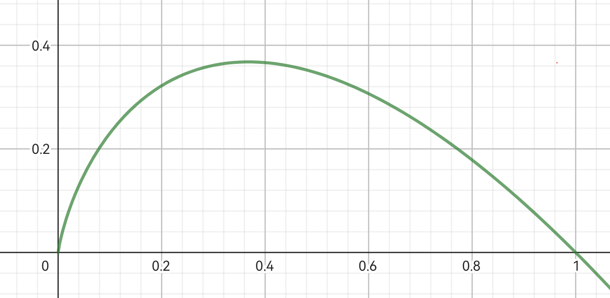
会发现，熵在0.5时就很大，这不就是我们最开始的希望吗？当事件发生还是不发生的可能性相近，这件事就很混乱了，因为我们并不能确切的判断它到底会不会发生，它的不确定性高。
就差最后一步了！我们已经学完了熵的概念和计算，最后我们终于要开始学习什么是交叉熵了。这一框的内容对于初学者可能难以吸收，所以我放慢了讲解速度，可能一句话会重复多遍，所以请确保你已经理解了以上讲的所有内容。
请再回想一下损失/代价函数的目的是什么，是为了比较并计算出神经网络的预测值和数据的真实值之间的误差。我们计算出熵，也是为了比较两个概率系统的误差。一个概率系统是神经网络，另一个是数据真实值的系统。MSE均方误差和最小二乘法本质上就是直接让两个系统拿出自己的预测结果去比一比，两个值的差的平方小那么可以认定两个系统此时是等效了，达到了我们的目的。交叉熵的本质则是将两个概率系统先转换出一个熵值，然后去比较一下。
我这里先把交叉熵的公式（单分类模式下）写出来：当模型（神经网络）的预测值为x而数据的目标真实值为t时（x、t均为概率且在0到1之间），交叉熵（CE(Loss) / Cross Entropy） 为 t*l(x)+(1-t)*l(1-x) 其中l()是计算信息量的函数，即l(x)=-ln(x)。 你会发现，交叉熵和熵其实很像，毕竟它是从熵演化而来的。唯一的区别在于，熵中我们说的”事件发生的信息量乘以发生的概率”中的”概率”不再是事件发生的概率（也就是预测值），而是真实值，不过信息量仍然是预测值上计算信息量，所以叫做”交叉”。其实对于这个交叉的原因，有一个比很多人讲的kl散度或相对熵更好理解的方法。 我们知道，通常真实值t是0或1，我们还知道，一个数乘以0等于0，乘以1等于它本身，那么我们去看看上面的公式，其中l(x)是事件发生的信息量，l(1-x)是事件没发生的信息量，那到底发不发生这件事？这就是t的意义了。t为0表示没发生，我们就当然++不++希望使用事件发生的信息量，所以用t乘以事件发生的信息量l(x)得到0，这一项就被我们完美忽略了，而右边那个是事件没发生的概率对应的信息量l(1-x)，这是我们想要的，所以乘以1-t=1得到了它本身，也就是没发生的概率对应的信息量，这时，根据信息量的原理和图像我们就能得知在1-x较大时信息量较小，所以在x较小时信息量较小，所以在x接近于0（即真实值t）时交叉熵的值较小；反之推导方法相同。 事实上，真实值t并不是必须为0或1，0-1之间的数都可以取，只不过这样的话交叉熵的值永远无法下降到0（即使预测值等于真实值），需要用MSE来检查是否收敛，这时的交叉熵仅用做反向传播求导。 以上是从代数角度理解了交叉熵的原理，网上有很多视频都是用kl散度（相对熵）引出交叉熵的，如果你想搞清楚可以去看一看。
接下来是交叉熵的geogebra动画：https://www.geogebra.org/m/pp5eqsvy 演示中滑动条xi是真实值（目标值），yi是预测值，图像中的横轴对应预测值，纵轴对应交叉熵计算出的损失值。
（二分类）交叉熵的导数有好几个写法，都可以互相转换，因为它们本质是等价的，网上人们用法不一，有时候看着突然有点陌生的式子还以为是作者写错了，其实并没有，比如交叉熵的导数可以是 (t-x) / (x^2-x) 或者 -t/x + (1-t)/(1-x)
交叉熵的js代码：
//交叉熵函数
function CE(out, out_hat){
if(out_hat==out){//防止log计算报错
return 0
}else{
return -(out*Math.log(out_hat)+(1-out)*Math.log(1-out_hat));
}
}
//交叉熵的导数，方便反向传播时求导
function CED(out, out_hat){
if(out_hat==out){
return 0
}else{
return -out/out_hat + (1-out)/(1-out_hat)
}
}c++版本：
//交叉熵函数
double CE(double out, double out_hat){
if(out_hat == out){//防止log计算报错
return 0;
}else{
return -(out * log(out_hat) + (1 - out) * log(1 - out_hat));
}
}
//交叉熵的导数，方便反向传播时求导
double CED(double out, double out_hat){
if(out_hat == out){
return 0;
}else{
return -out / out_hat + (1 - out) / (1 - out_hat);
}
}可是为什么用交叉熵呢？它比MSE、MLE损失/代价函数好在哪里了？下面这个geogebra演示动画像你展示了一切：https://www.geogebra.org/m/nx9wsb32 我现在设定目标真实值为0.25，图像横轴是预测值，纵轴是损失值，三条曲线分别对应三个损失函数：MSE均方误差、MLE极大似然估计、CELoss交叉熵。 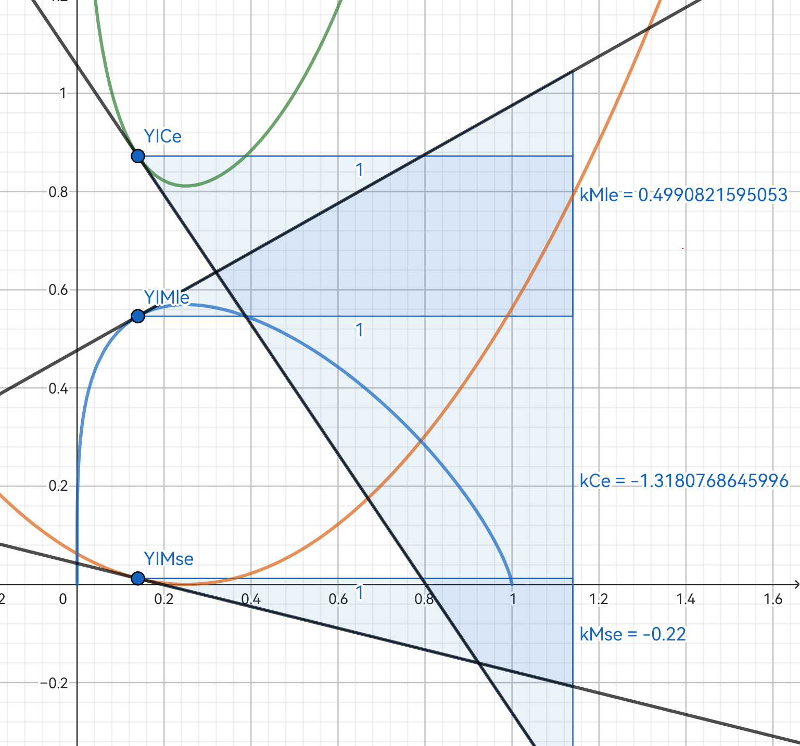 绿色曲线是交叉熵，橙色是均方误差，它们两个是要寻找最小值；蓝色是极大似然估计，它要寻找最大值。蓝色点横坐标就是预测值了，当这个点来到最小（MLE中是最大）的损失值的位置时，自身的横坐标（预测值）与真实值yi相等。我们看一看三个损失函数上这一点对应的三条黑色的切线和其斜率k，这个斜率就是我们在反向传播过程中损失值对预测值的偏导了，我们知道它参与每个梯度的计算，它很重要，我们希望梯度大一点，这样更快收敛，但不希望梯度爆炸，这样只会让我们的模型报废。你可以试一试拖动滑动条，你会发现不论什么真实值和预测值，永远是 交叉熵的斜率>极大似然估计的斜率（乘以-1）>均方误差的斜率 ，也就是▽CELoss > ▽MLE > ▽MSE ，这里的▽就是我们以前学的那个梯度符号。因此，交叉熵能让我们的模型更快更好地收敛。
这一框的内容可真多，大概是目前为止梯度下降和反向传播那两部分后最难的一部分内容了，但是交叉熵确实十分重要，对模型的训练有很大帮助，希望你能理解这一框中的内容。
其实学了以上内容，我们已经可以实战一次，做一个小型手写识别模型。这个模型可以判断出你想写出来的字母是不是X。不过，现在只能使用c++版本了，因为js版本运行实在很慢，在这之前我说过，如果你不熟悉c++，你应该逐步尝试接触它了，因为它的运行速度有时能达到js等语言的几百倍，本书后面也会以c++作为主要的实战语言。如果你使用移动设备，可以使用免费的c4droid运行c++代码，它支持的功能也比较完整；电脑端一般使用免费的Visual Studio 2022等就可以了，并不复杂。
#include <iostream>
#include <vector>
#include <cmath>
#include <fstream>
#include <string>
#include <sstream>
using namespace std;
//保存神经网络权重偏置参数至二进制文件
void saveNetwork(const std::vector<std::vector<std::vector<std::vector<double>>>>& tensor, const std::string& filename) {
std::ofstream out(filename, std::ios::binary);
for (const auto& three_dim : tensor) {
for (const auto& two_dim : three_dim) {
for (const auto& one_dim : two_dim) {
for (const double& value : one_dim) {
out.write(reinterpret_cast<const char*>(&value), sizeof(double));
}
}
}
}
out.close();
}
void loadNetwork(const std::string& filename, std::vector<std::vector<std::vector<std::vector<double>>>>& tensor) {
std::ifstream in(filename, std::ios::binary);
for (auto& three_dim : tensor) {
for (auto& two_dim : three_dim) {
for (auto& one_dim : two_dim) {
for (double& value : one_dim) {
in.read(reinterpret_cast<char*>(&value), sizeof(double));
}
}
}
}
in.close();
}
//全局变量
std::vector<std::vector<std::vector<std::vector<double>>>> network;//由于c++的vector不允许像js的数组一样随意在每层嵌套不同类型数据（即c++中的vector和double），所以必须给偏置系数外加一个{}，使它也成为vector，具体见main函数network赋值处
std::vector<std::vector<double>> networkn;
std::vector<std::vector<double>> networkb;
double rate;//学习率
double aim;//目标损失值
//快速生成指定长度的数值全部为0.1的vector
std::vector<double> generateVector(int length) {
std::vector<double> result(length, 0.1);
return result;
}
//一个神经元
vector<double> neuron(std::vector<double> w, std::vector<double> x, double b) {
//使用elu作为激活函数
auto elu = [](double x) {
if (x >= 0) {
return x;
} else {
return 1.0 * (exp(x) - 1);
}
};
//求和∑wx+b
auto sigma = [&w, &x, b]() {
double sum = 0;
for (int i = 0; i < w.size(); i++) {
sum += w[i] * x[i];
}
return sum + b;
};
double sum = sigma();//激活前的值
return { sum,elu(sum) };
}
vector<double> S_neuron(std::vector<double> w, std::vector<double> x, double b) {
//使用sigmoid作为激活函数（后续会学习）
auto sigmoid = [](double x) {
return 1 / (1 + exp(-x));
};
//求和∑wx+b
auto sigma = [&w, &x, b]() {
double sum = 0;
for (int i = 0; i < w.size(); i++) {
sum += w[i] * x[i];
}
return sum + b;
};
double sum = sigma();//激活前的值
return { sum,sigmoid(sum) };
}
double sigmoid_derivative(double y) {
return y * (1 - y);
}
double elu_derivative(double x) {
if (x >= 0) {
return 1;
} else {
return 1.0 * exp(x);
}
}
double CE(double out, double out_hat) {
if (out_hat == out) {
return 0;
}else {
return -(out * log(out_hat) + (1 - out) * log(1 - out_hat));
}
}
double CED(double out, double out_hat) {
if (out_hat == out) {
return 0;
} else {
return -out / out_hat + (1 - out) / (1 - out_hat);
}
}
//预测-向前传播
vector<double> predict(vector<double> content) {
//向前传播至隐藏层
for (int m = 0; m <= networkn[0].size() - 1; m++) {
auto r0 = neuron(network[0][m][0], content, network[0][m][1][0]);//与js不同，最后面要加上[0]，原因见全局变量声明处，下同
networkb[0][m] = r0[0];//未激活值
networkn[0][m] = r0[1];//激活值
}
//向前传播至输出层
for (int n = 0; n <= networkn[1].size() - 1; n++) {
auto r1 = S_neuron(network[1][n][0], networkn[0], network[1][n][1][0]);
networkb[1][n] = r1[0];//未激活值
networkn[1][n] = r1[1];//激活值
}
return networkn[1];
}
//训练-反向传播-随机梯度下降
double trainNet(vector<vector<double>> dt) {
std::vector<double> out_hat = predict(dt[0]);//预测
double CEError = 0;
for (int l = 0; l <= out_hat.size() - 1; l++) {
CEError += CE(dt[1][l], out_hat[l]);
}
CEError = CEError / dt.size();
std::vector<double> rMEdN;
for (int l = 0; l <= out_hat.size() - 1; l++) {
rMEdN.push_back(rate * CED(dt[1][l], out_hat[l]) * sigmoid_derivative(networkn[1][l]));
}
double sum = 0;
for (int i = 0; i < rMEdN.size(); i++) {
sum += rMEdN[i];
}
double rMEdNA = 0;
if (rMEdN.size() > 0) {
rMEdNA = sum / rMEdN.size();
}
//更新输出层权重
for (int p = 0; p <= networkn[1].size() - 1; p++) {
for (int q = 0; q <= network[1][p][0].size() - 1; q++) {
network[1][p][0][q] -= rMEdN[p] * networkn[0][q];
}
}
//更新输出层偏置
for (int p = 0; p <= networkn[1].size() - 1; p++) {
network[1][p][1][0] -= rMEdN[p];
}
//更新隐藏层权重
for (int p = 0; p <= networkn[0].size() - 1; p++) {
for (int q = 0; q <= network[0][p][0].size() - 1; q++) {
double averagenN = 0;
for (int s = 0; s <= network[1].size() - 1; s++) {
averagenN += network[1][s][0][p];
}
averagenN = averagenN / network[1].size();
network[0][p][0][q] -= rMEdNA * averagenN * elu_derivative(networkb[0][q]) * dt[0][q];
}
}
//更新隐藏层偏置
for (int p = 0; p <= networkn[0].size() - 1; p++) {
double averagenN = 0;
for (int s = 0; s <= network[1].size() - 1; s++) {
averagenN += network[1][s][0][p];
}
averagenN = averagenN / network[1].size();
network[0][p][1][0] -= rMEdNA * averagenN * elu_derivative(networkb[0][p]);
}
return CEError;
}
void train(vector<vector<vector<double>>> dt) {
int i = 0;
while (true) {
i++;
double err = 0;
for (int c = 0; c <= dt.size() - 1; c++) {
double preErr = trainNet(dt[c]);
err += preErr;
}
if (i % 1000 == 0) {
rate *= 10;//由于这个模型训练到后期时接近最优点梯度较小，所以增大学习率，后面会再学习更有效的自适应学习率算法
}
if (err <= aim) {
std::cout << "Training completed with err <= " << aim << " (" << err << ")" << std::endl;
std::cout << ">>> finished " << dt.size() * i << " steps (" << i << " rounds) gradient descent in " << /*elapsed + */"ms <<<" << std::endl;
break;
} else {
std::cout << "Round: " << i << " Training: " << dt.size() * i << " CEloss: " << err << std::endl;
}
}
}
int main() {
network = {
{
{{generateVector(49)},{0.1}},
{{generateVector(49)},{0.1}},
{{generateVector(49)},{0.1}},
{{generateVector(49)},{0.1}},
{{generateVector(49)},{0.1}},
{{generateVector(49)},{0.1}},
{{generateVector(49)},{0.1}},
{{generateVector(49)},{0.1}},
{{generateVector(49)},{0.1}},
{{generateVector(49)},{0.1}},
{{generateVector(49)},{0.1}},
{{generateVector(49)},{0.1}},
{{generateVector(49)},{0.1}},
{{generateVector(49)},{0.1}},
{{generateVector(49)},{0.1}},
{{generateVector(49)},{0.1}},
{{generateVector(49)},{0.1}},
{{generateVector(49)},{0.1}},
{{generateVector(49)},{0.1}},
{{generateVector(49)},{0.1}},
{{generateVector(49)},{0.1}},
{{generateVector(49)},{0.1}},
{{generateVector(49)},{0.1}},
{{generateVector(49)},{0.1}},
{{generateVector(49)},{0.1}}
},
{
{{generateVector(25)},{0.1}}
}
};
networkn = {
{0,0,0,0,0,0,0,0,0,0,0,0,0,0,0,0,0,0,0,0,0,0,0,0,0},
{0}
};
networkb = {
{0,0,0,0,0,0,0,0,0,0,0,0,0,0,0,0,0,0,0,0,0,0,0,0,0},
{0}
};
rate = 0.03;//学习率
aim = 1e-10;//目标损失值
train({
{{
0,0,0,0,0,0,0,
0,0,0,0,0,0,0,
0,0,0,0,0,0,0,
0,0,0,0,0,0,0,
0,0,0,0,0,0,0,
0,0,0,0,0,0,0,
0,0,0,0,0,0,0,
},{0}},
{{
1,0,0,0,0,0,1,
0,1,0,0,0,1,0,
0,0,1,0,1,0,0,
0,0,0,1,0,0,0,
0,0,1,0,1,0,0,
0,1,0,0,0,1,0,
1,0,0,0,0,0,1,
},{1}},
{{
1,1,1,1,1,1,1,
1,0,0,0,0,0,1,
1,0,0,0,0,0,1,
1,0,0,0,0,0,1,
1,0,0,0,0,0,1,
1,0,0,0,0,0,1,
1,1,1,1,1,1,1,
},{0}},
{{
0,1,0,0,0,0,0,
0,1,1,0,0,1,0,
0,0,1,0,1,0,0,
0,0,1,1,1,0,0,
0,0,1,0,1,0,0,
0,0,0,0,0,1,1,
0,1,0,0,0,0,0,
},{1}},
{{
1,1,0,0,0,0,0,
0,1,1,0,0,1,0,
0,0,1,0,1,0,0,
0,0,0,1,0,0,0,
0,0,1,0,1,0,0,
0,1,0,0,0,1,0,
0,1,0,0,0,0,1,
},{1}},
{{
1,1,0,0,0,0,0,
0,1,0,0,0,1,1,
0,0,0,0,0,0,0,
0,0,0,0,0,0,0,
0,0,0,0,0,0,0,
0,0,0,0,0,1,1,
0,1,0,0,0,0,0,
},{0}},
{{
0,0,0,0,0,0,0,
0,1,0,0,0,1,1,
1,0,0,0,0,0,1,
1,1,1,1,1,1,1,
1,0,0,0,0,0,1,
0,0,0,0,0,1,0,
0,0,0,0,0,0,0,
},{0}},
{{
0,0,0,0,0,0,0,
0,1,0,0,1,0,0,
0,0,1,1,0,0,0,
0,0,1,0,1,0,0,
0,0,1,0,0,1,0,
0,1,0,0,0,0,0,
0,1,0,0,0,0,0,
},{1}},
{{
1,1,1,1,1,1,1,
1,1,1,1,1,1,1,
1,1,1,0,1,1,1,
1,1,0,0,0,1,1,
1,1,1,0,1,1,1,
1,1,1,1,1,1,1,
1,1,1,1,1,1,1,
},{0}},
{{
0,0,0,0,0,0,0,
1,0,0,0,1,0,0,
0,1,0,1,0,0,0,
0,0,1,0,0,0,0,
0,1,0,1,0,0,0,
1,0,0,0,1,0,0,
0,0,0,0,0,0,0,
},{1}},
{{
0,0,0,0,0,0,0,
0,0,0,0,0,0,1,
0,0,0,1,0,1,0,
0,0,0,0,1,0,0,
0,0,0,1,0,1,0,
0,0,0,0,0,0,0,
0,0,0,0,0,0,0,
},{1}},
{{
0,0,0,0,0,1,0,
0,0,1,0,1,0,0,
0,0,0,1,0,0,0,
0,0,1,0,1,0,0,
0,0,0,0,0,1,0,
0,0,0,0,0,0,1,
0,0,0,0,0,0,0,
},{1}},
{{
0,0,0,0,0,0,0,
0,0,0,0,0,0,0,
1,0,0,0,0,0,0,
0,1,0,0,1,0,0,
0,0,1,1,0,0,0,
0,0,1,0,1,0,0,
1,1,0,0,0,1,0,
},{1}},
{{
0,1,0,1,0,0,1,
0,0,0,1,0,0,0,
1,0,1,0,0,0,0,
0,1,0,0,1,0,0,
0,0,0,1,1,0,1,
0,0,1,0,1,0,0,
1,0,0,1,0,1,0,
},{0}}
});
saveNetwork(network, "./model_1.bin");//保存你训练好的模型权重和偏置参数到二进制的.bin文件中，这里路径改为自己的存储路径
/*训练完成后下次使用时可以删去上面的train()，改用
loadNetwork("model_1.bin", network);//这里路径改为自己的存储路径
直接从保存的.bin二进制文件中读取模型权重和偏置参数，然后使用
double result = predict({
0,0,0,0,0,0,0,
0,1,0,0,0,1,0,
0,0,1,0,1,0,0,
0,0,0,1,0,0,0,
0,0,1,0,1,0,0,
0,1,0,0,0,1,0,
0,0,0,0,0,0,0,
})[0];
std::cout << result << std::endl;
将0改成1用1来表示白色，模型将预测是否包含字母X
*/
return 0;
}你可以增加更多训练数据让它预测更准确，也可以试着用这个框架让它做一些别的事情，比如识别数字、和它玩一些数字游戏让它找规律…
我们先简单谈一谈多分类吧，前面的内容中，我们大部分时间是在研究只有一个输出神经元的神经网络，像这样： 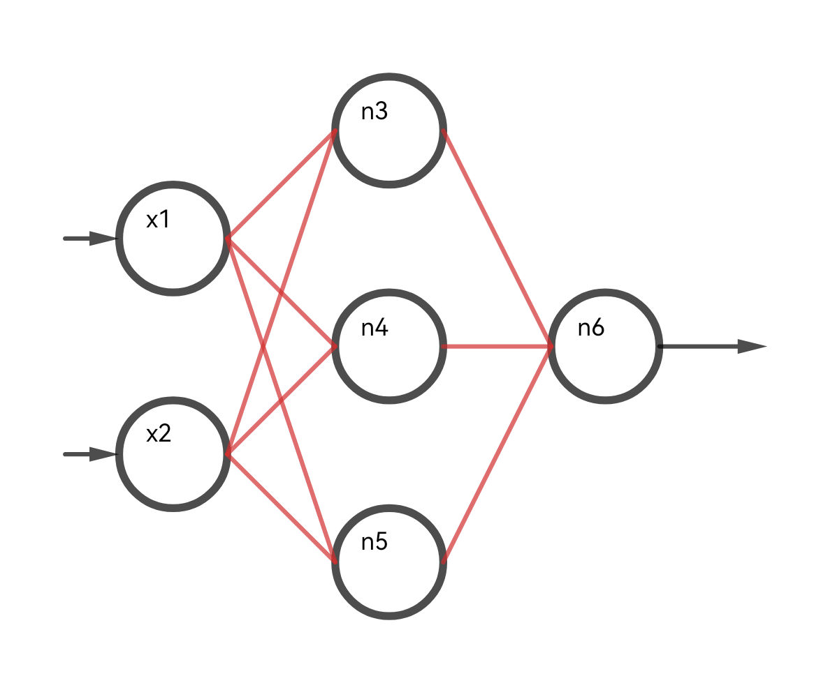 这样的神经网络只能进行单分类，如输出一个手写数字图片写的是1的概率是多少，或者一张图片里有没有一棵树等等，但我们今天要让它进行多分类，比如分别预测出手写图片数字是0、是1、是2…是9的预测概率是多少，或者分别输出一张图片中展示的是一棵树的概率、展示的是草地的概率和展示的是花的概率是多少，这时候就要使用多个输出神经元了： 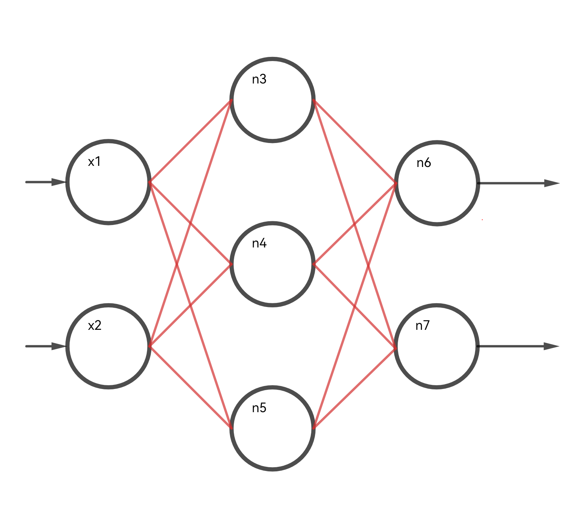 多个输出神经元每个神经元和前一个隐藏层的每个神经元也是全连接的。反向传播时，一个隐藏层神经元会连接多个输出层神经元，所以每个它所连接的输出神经元对如何修改这个隐藏神经元的激活值（本质上是修改其w和b）都有自己的想法。如上图，我们知道想要优化n6和n7，反向传播时一方面要修改这些隐藏层和输出层之间的权重，不会互相有冲突，但也要把误差继续传播到隐藏层神经元上，再让隐藏层神经元把误差分给输入层和隐藏层之间的权重上（这里我先省略偏置项了）。拿n6和n7连接的n3神经元举例，它的输出值的改变会同时影响着n6和n7输出产生的误差损失，所以会有两个▽n3，即 ∂n6/∂n3 和 ∂n7/∂n3 ，这时候我们通常将两个结果相加（求平均也可以），得到最终的相加后的▽n3，即 ∂loss/∂n3 ，注意这里n3指的是其激活值，得到相加后的梯度后，方可像以前讲的一样再去反向传播修改w和b了。 这里一定一定要非常小心仔细，尤其是落实到代码上时，很容易把这里的链式求导写错，我在学习神经网络时被这个问题困扰了好久，这里再强调一下：就拿刚刚的内容举例，∂n6/∂n3 应该展开为 ∂n6/∂z6 * ∂z6/∂n3 这里的n6是6号神经元的激活值，而z6指的是6号神经元激活前的wx+b的值，根据之前学习的知识，∂n6/∂z6 就是对激活函数求导，∂z6/∂n3 就等于连接3号神经元和6号神经元的权重w36，我想特别强调的是，我们把两个输出神经元对3号神经元反向传播的梯度 ∂n6/∂n3 和 ∂n7/∂n3 相加展开得到的应该就是（假设激活函数求导∂n6/∂z6和∂n7/∂z7的结果分别是k6、k7）： k6*w36 + k7*w37 ++不要++误写成 k6+k7 的和再分别乘以w36和w37，一方面这个式子本身是不正确的，另一方面在我们学习使用softmax归一后，k6+k7通常等于0，也就是梯度永远会算成0，所以这里值得注意，不要写错。
我们先回想下概率，再谈谈Softmax。假如我让一个神经网络判断一张图片里有没有一棵树，那么本质上它输出的是一个0到1之间的概率（我们通过在输出神经元上使用sigmoid激活函数来实现这一点），概率越接近0表示有树的可能性越小，反之接近1表示有树的概率较大。现在，我们想知道图片里展示的是树还是花还是草，那么想要用一个神经网络预测，就要有三个输出神经元，分别代表的是树、花、草的概率是多少。但问题来了，这些输出神经元该使用什么激活函数呢？sigmoid确实可以将每个输出神经元的结果缩放到0-1之间，但比如一个神经元激活值是0.6，一个是0.5，一个是0.3，三个概率加起来总共是1.4，而不是1，所以它表示的就不是概率了，我们需要让这三个神经元激活后分别代表三个概率，所以三个激活值之和必须等于1，这就是归一化操作。 说到这里，你可能已经想到该如何做了。如果没有，请暂停阅读，仔细思考一下问题的本质，再看看自己能不能预判到我们会如何归一化结果。 我们仅需使用所有激活值之和作为每个输出值的分母即可，你也可以理解为每个激活值的量占了所有激活值之和这个值的多少。比如，有三个神经元激活值分别是0.6、0.5和0.3，先算出它们的和，即0.6+0.5+0.3=1.4，然后再计算三个神经元最终的预测值，分别是0.6/1.4、0.5/1.4和0.3/1.4，计算结果分别大约是0.42、0.35和0.21，是归一的（这里有点误差）。 接下来，我们还要引入以e为底的指数函数，一方面方便反向传播求导，另一方面可以使较大的值激活后变的更大，而且允许负输入（因为e的x方恒为正数），最终我们得到的softmax（Normalized exponential function / 归一化指数函数） 函数如下： 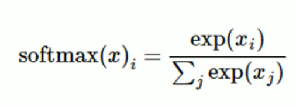
再简单解释一下（exp(x)就是e的x次方的意思），分子xi是当前正在进行激活的输出神经元的wx+b的值，分母求和操作是所有输出神经元的wx+b的值每个都经过以e为底的指数运算后再相加（其中也包括当前正在激活的xi的exp(xi)值）。举个例子，三个输出神经元的wx+b的值分别是z1、z2、z3，那么第一个神经元的激活值就等于 exp(z1) / (exp(z1)+exp(z2)+exp(z3)) 第二、三个神经元以此类推，但是分母不变，只变分子exp(z1)里面的z1为z2或z3。
然后我们看一下softmax函数的函数图像，这里我还是举例有三个准备激活的值（x、z2和z3），我们只关注下图表达式中的x，它是我们正在进行激活操作的值，所以它是这里的自变量，x的大小和x的激活值的函数关系图就是softmax函数的函数图像：
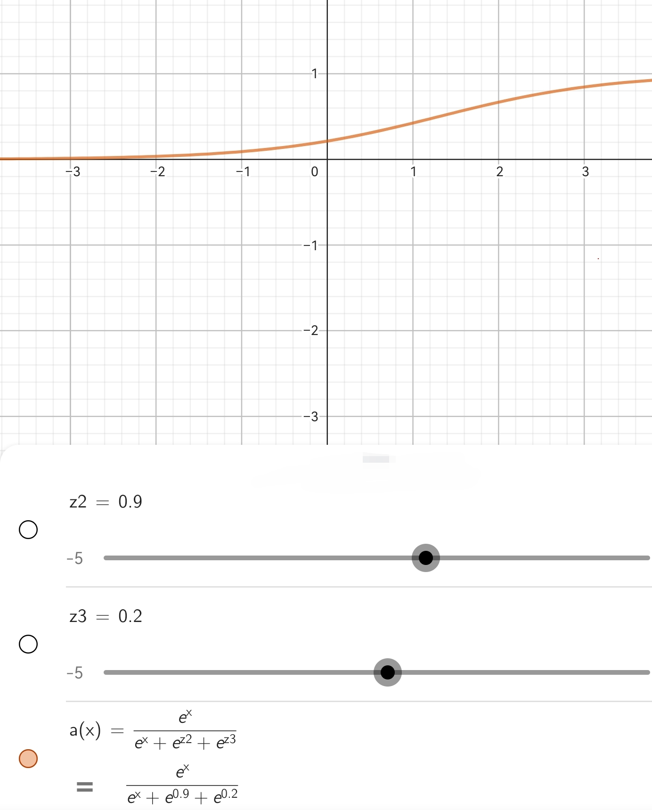 好吧，我知道你大概想说什么，这不就是sigmoid函数的函数图像吗？说到这里，是时候看一下sigmoid函数的另一种写法了： 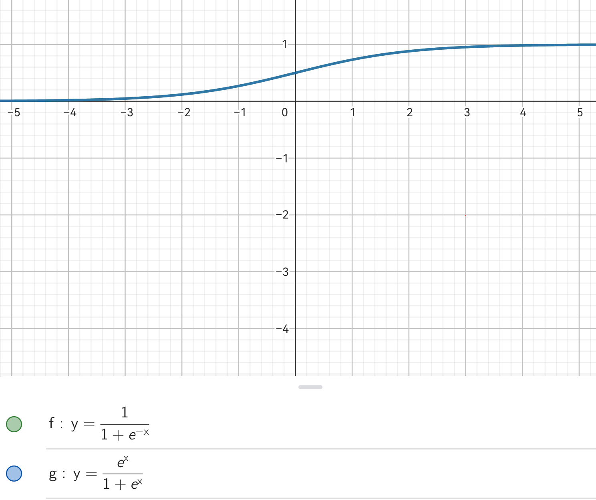
我们之前一直使用的sigmoid是图中的第一个式子，但根据下面的推导，我们将分子和分母同时乘以e^x： 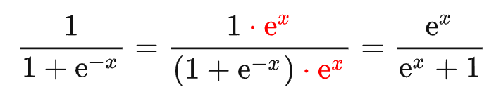
这时，最终式子分母上的1其实就对应着刚刚我们看到的softmax函数上分母上的 e^z2 + e^z3 部分。
这是Softmax函数的Geogebra数学动画演示：https://www.geogebra.org/m/gdhw6n9k
以下是Softmax在c++中的代码实现：
#include <vector>
#include <cmath>
#include <iostream>
using namespace std;
//计算每一个激活值（分子比分母）
vector<double> softmax2(std::vector<double> output, double sum){
std::vector<double> yhat(output.size(), 0);
for(int i=0; i<=output.size(); i++){
yhat[i] += exp(output[i]) / sum;
}
return yhat;
}
vector<double> softmax(std::vector<double> input){
//计算分母
double sum = 0;
for(int i=0; i<=input[1].size(); i++){
sum += exp(input[1][i]);
}
vector<double> out = softmax(input[1], sum);//计算每一个激活值
return out;
}在训练多分类神经网络进行反向传播时，我们需要在最后输出层使用Softmax作为激活函数，同时我们也通常使用适用于多分类的交叉熵作为损失代价函数。这是因为交叉熵不仅带来了较大的梯度，而且两者结合起来求导会得到一个非常简洁的结果。 我们先看一下多分类交叉熵： 之前学过，单分类交叉熵的表达式是loss = t*l(x)+(1-t)*l(1-x) 其中x是预测值，t是真实值，l()是计算信息量的函数，即l(x)=-ln(x)。在多分类中，每个输出神经元都是有误差损失值的，但是我们不能用以上公式，因为使用Softmax后，所有输出神经元的预测值加起来才是归一的，而上面的公式则使用了1-t和1-x这两项（具体原因在前一节讲过），这相当于是认为每个神经元的输出值都在0-1之间。解决这个问题的方法很简单，只需要直接去掉(1-t)*l(1-x)这部分，得到单个输出神经元的loss = t*l(x) ，把计算信息量的l(x)展开，最后得到了 loss = -t*ln(x) 然后你可能已经发现问题了。这里的两个问题曾经困扰我一段时间，所以必须要解释一下：
问题1：当真实值t为0的时候，那预测值x是多少不都会导致损失值loss等于0吗？（如下图所示） 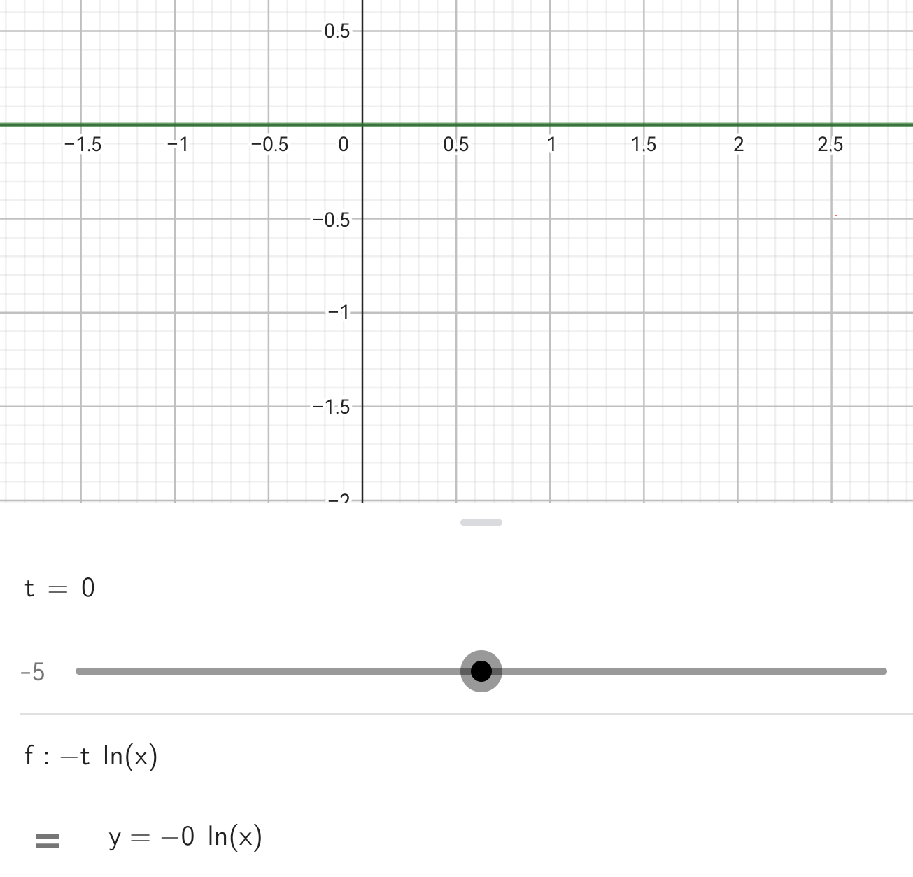
解答：确实会导致loss为0，但是不要忘记我们正在使用Softmax，想要提高一个神经元的预测值并降低其它神经元的预测值有两种方法，一是降低其它神经元的预测值来突显这个我们想要变大的预测值，二是直接增大我们想要变大的预测值同时也可以来掩盖其它相对较小的预测值。举个例子，有三个输出神经元的激活之前的值（设为z1、z2和z3）分别是1，1，1，使用softmax激活后变成的预测值分别就是0.33，0.33，0.33，如果我们想要提高第一个预测值，可以降低后两个神经元的z值到非常非常小，然后再进行激活就会得到0.98，0.01，0.01相似的结果；我们也可以把z1提高到非常大，激活后也会得到0.98，0.01，0.01相似的结果。我们之前一直默认同时使用这两种方法对神经网络进行优化，但使用多分类交叉熵时不同，我们只选择后者作为优化方法，也就是说，我们不会尝试直接降低z2、z3的值（即它们的真实值为0时它们的预测值的损失值也是0），而是去不断增大z1的值（即它的真实值为1时它的预测值的损失值大于0（严谨的说不会等于0，因为z2、z3仍有一定大小的激活值，尽管非常非常小）），从总体上看，这种方法也是可行的，而且一会我们学习到softmax与多分类结合求导时，会发现这些神经元其实也是会得到优化的。
问题2：当真实值t为1、预测值x也为1时，即使损失值为0，梯度却不为0，这样难道不会把预测值x给优化成负数了吗？（如下图所示） 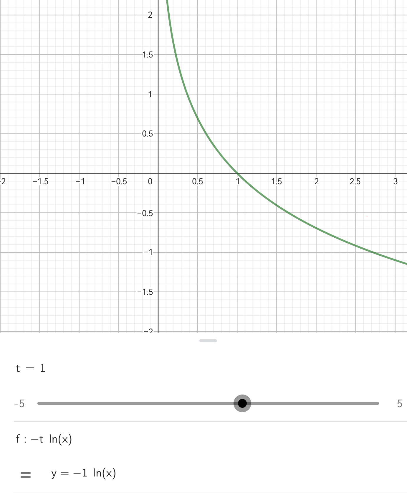 解答：别忘了交叉熵里可是有ex这个指数函数的，不论输入x是正数还是负数，ex永远大于0，所以我们并不会把预测值给优化成负数，而是会把激活前的z值优化成负数，这样就合情合理了。（附一张y=e^x函数图，如果你忘了的话：） 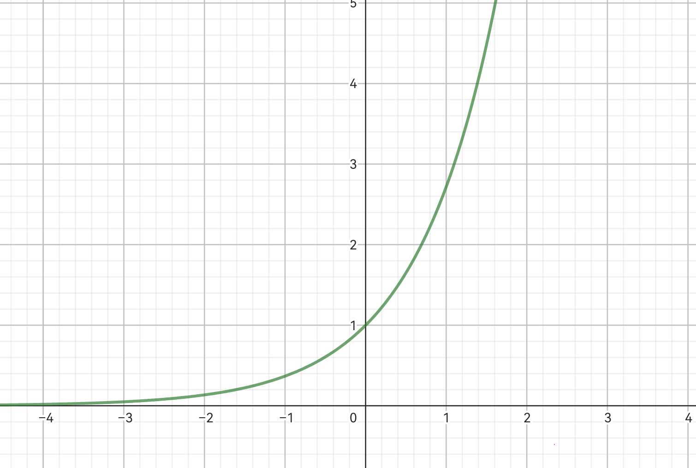
问题解决了，下面就是将softmax和多分类交叉熵结合起来。 我们关注下面这个神经网络的输出层，让我们先看一看前馈的过程： 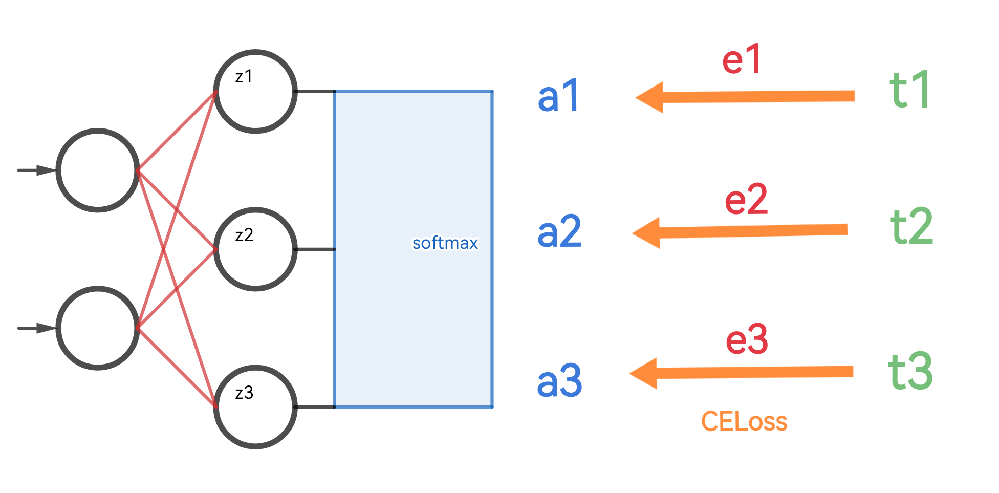 在激活之前，三个输出神经元算出的∑wx+b的值分别为z1、z2、z3，经过softmax激活后，得到激活值： a1 = e^z1 / (ez1+ez2+e^z3) a2 = e^z2 / (ez1+ez2+e^z3) a3 = e^z3 / (ez1+ez2+e^z3) 这里提醒一下，举个例子，z1的影响不仅限于a1的分子，也会对a1、a2和a3的分母产生影响的，别忘记了。 接下来，这三个激活值（也就是神经网络的预测值）和我们期望的数据的真实值t1、t2、t3之间分别产生了误差（多分类交叉熵）： e1 = -t1*ln(a1) e2 = -t2*ln(a2) e3 = -t3*ln(a3) 最后，我们将所有损失值加起来，得到了神经网络总的误差代价值： cost = e1 + e2 + e3 以上就是数值前馈的过程，得到了误差，我们就要想办法反向传播它们，来分别算出z1、z2和z3上的梯度，进而再去更新前面的各种权重、偏置参数。
反向传播的过程主要就是数学推导了，我们这里就拿z1来举例吧，要求z1的梯度，即 ∂cost/∂z1 的值。这里再强调一下，别忘记z1对e1、e2和e3都是有影响的，因为它出现在了三者softmax公式的分母上。所以我们要先算出∂cost/∂a1、∂cost/∂a2 和 ∂cost/∂a3 。 ▽a1 = ∂cost/∂a1 = ∂cost/∂e1 * ∂e1/∂a1 = 1 * -t1/a1 = -t1/a1 其中-t1/a1是由-ln(x)的导数是-1/x得出的。剩下的 ∂cost/∂a2 和 ∂cost/∂a3 同理。 接下来我们要算出a1、a2和a3分别对z1的偏导。这里我们就需要分类讨论了，因为求a1对z1的偏导时，z1同时出现在了softmax的分子和分母上，而求a2、a3对z1的偏导时，z1只出现在了它们的softmax的分母上。 情况一： ∂a1/∂z1 = Softmax(z1)*(1-Softmax(z1)) = a1*(1-a1) 这个推导的具体过程和Sigmoid是一样的，可以在网上找到详细讲解。 情况二： ∂a2/∂z1 = a1*a2 ∂a3/∂z1 = a1*a3
我们把全部求导过程结合起来，得到： ▽z1 = ∂cost/∂z1 = ∂cost/∂a1 * ∂a1/∂z1 + ∂cost/∂a2 * ∂a2/∂z1 + ∂cost/∂a3 * ∂a3/∂z1 = (-t1/a1) * a1*(1-a1) + (-t2/a2) * a1*a2 + (-t3/a3) * a1*a3 = -t1*(1-a1) + t2*a1 + t3*a3 = -t1 + t1*a1 + t2*a1 + t3*a3 = -t1 + a1*(t1+t2+t3) 由于softmax的多分类神经网络预测值和真实值都是永远归一的，也就是说t1、t2、t3中只有一个等于1，其余的都等于0，所以 t1+t2+t3=1 ▽z1 = -t1 + a1*(t1+t2+t3) = -t1 +a1*1 = a1 - t1 以上就是▽z1的计算过程，同理，可得： ▽z2 = a2 - t2 ▽z3 = a3 - t3 算出这些后，我们就可以继续反向传播来更新权重和偏置参数了，比如假设1号输出神经元前面连接了一个隐藏神经元，其激活值为x，1号输出神经元与其连接权重为w，那么可得 ▽w=▽z1*x 等结果。 就这样，看似及其复杂的 Softmax+多分类交叉熵 的结合求导，竟然变成了惊人简洁的a-t，将计算量整整降低了好几倍。
我们已经优化了神经网络本身，并加入了多分类。现在，我们已经可以训练一个0-9的手写数字识别模型了。
由于代码相对较长，就不再书中展示了，请前往本书所在的Github仓库（https://github.com/BKLAI/AI-Learning）
，找到./src/num_predict.cpp
并下载到本地使用c++运行，还需要使用到MNIST数据集，这一个免费的手写数字训练数据资源，其中是许多28*28像素的手写数字灰度图，其中包含50000个训练数据用于训练我们的神经网络，和10000个测试数据用于训练完成后我们来评估神经网络的训练成果。为了方便，我已经将其中的1000个训练数据和100多个测试数据的灰度数据提取出来，存入到了txt文本文件（我将它们放在了本书所在的Github仓库的./src/data
文件夹下，请直接下载data文件夹并和刚刚的num_predict.cpp放在同级目录下），在该c++代码中有相应函数可以读取出这些数据并解析转换为vector作为神经网络的输入内容。你也可以选择去从MNIST官方（http://yann.lecun.com/exdb/mnist/）
下载到原数据集并自行写相应代码实现转换，仅需将全部灰度值依次存入vector即可。
这些代码还没有经过优化，但我们将在后面对其进行优化，所以目前运行起来似乎有一点慢。请自行调整合适的学习率（即代码中的rate变量，在main函数中可以找到），训练时神经网络可能会陷入缓慢期，你可以先设置目标损失值（即代码中的aim变量，也可以在main函数中可以找到）为100左右，将rate设置小一点，比如0.0003，等待训练完成后，代码中的saveNetwork(network, "./num_predict.bin");函数可以将神经网络的模型权重、偏置（vector）参数以二进制形式保存到指定路径的.bin文件中，下次想要继续上次的训练时，可以在main函数的开头使用loadNetwork("./num_predict.bin", network);直接从文件读取出模型的数据并自动转换赋值到network变量上，作为神经网络所有权重、偏置数据。接下来训练时，我们可以将aim再设小一点，比如10，将rate设大一点，比如0.01，以此类推，直到损失值达到你期望的为止，比如0.001。但不要太小，否则会出现过拟合现象，这一点以后会学习到。
我还写了一个html手写板小工具，你可以直接打开它并手写一个数字，数字的灰度图会立即显示在下方输入框中，你可以将这些文本灰度数据复制，在你的num_predict.cpp所在位置再创建一个文本文件，并将刚刚复制的数据粘贴到其中，最后在num_predict.cpp的main函数代码中，使用预测你的手写数字的那一行代码，将“your_data_path.txt”替换为你刚刚创建的文本文件名，运行程序（训练好的神经网络）即可预测你写的数字是几（打印在控制台的输出是一个向量，向量的第一个数是“数字为0”的预测概率，以此类推）。该文件在
./src/num.html 位置。 我训练好的模型放在了仓库的 ./src/num_predict.bin
位置，你也可以使用该模型测试手写数字识别。
为了将运行速度达到极高的程度，我们可以在Intel等CPU上使用SSE2、AVX2或AVX512等指令集并使用多线程训练运行我们的模型。 我们使用数据并行原理，使用小批量随机梯度下降法（MSGD / Mini-batch Stochastic Gradient Descent），即在之前所学的SGD的基础上，一次反向传播多个数据，针对每一个神经网络参数，把每个数据算出来的该参数的梯度求和或平均，在用它来更新这个参数。我们创建一个线程池，让每个线程领取相应的一个数据的反向传播任务，该线程完成任务后，会将算出的所有梯度值返回给主线程，主线程等待所有其它线程都完成各自的梯度计算任务后，再统一更新模型参数。 这里以SSE2指令集为例，代码位于仓库的 ./src/num_predict_fast.cpp 位置，你还需要把 ./src/fast.h 也和该cpp文件放在一起，因为fast.h中包含了num_predict_fast.cpp所要使用的SSE2指令集运算函数。
在第一册书中，你已经初步学习了神经网络，并且非常深刻地理解了它的本质和设计原理，并据此对其进行改进，最终投入简单的实践。在下一册书中，我们将接触深度学习领域，看到基于神经网络所开发出的更加强大的模型，并逐步将数学理论变为真正的工程实践，服务你所需要的领域，或探索未知的新事物。
本书是开源在Github的免费书籍，如果您在阅读中有任何方面疑问，欢迎通过 电子邮件、Youtube、QQ（中国大陆）联系本书作者，或在本仓库或其它相关位置进行讨论。 您可以通过本书的开源网址进行学术或其它目的的引用，如需转载部分内容（出于非商业用途并遵循CC BY-NC-SA 4.0），无需向作者单独申请，希望本书内容对您有所帮助。
感谢所有在网络或其它途径上在机器学习领域免费共享知识的作者。